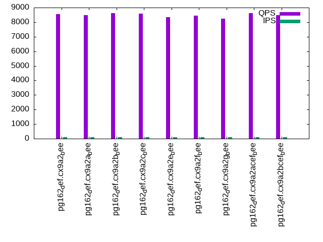
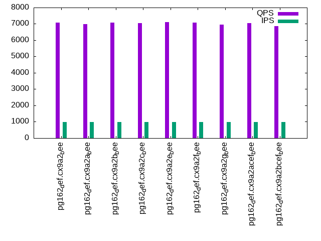

This is a report for the insert benchmark with 800M docs and 1 client(s). It is generated by scripts (bash, awk, sed) and Tufte might not be impressed. An overview of the insert benchmark is here and a short update is here. Below, by DBMS, I mean DBMS+version.config. An example is my8020.c10b40 where my means MySQL, 8020 is version 8.0.20 and c10b40 is the name for the configuration file.
The test server has 8 AMD cores, 16G RAM and an NVMe SSD. It is described here as the Beelink. The benchmark was run with 1 client and there were 1 or 3 connections per client (1 for queries or inserts without rate limits, 1+1 for rate limited inserts+deletes). It uses 1 table. It loads 800M rows per table without secondary indexes, creates 3 secondary indexes per table, then inserts 4m+1m rows per table with a delete per insert to avoid growing the table. It then does 6 read+write tests for 1800s each that do queries as fast as possible with 100,100,500,500,1000,1000 inserts/s and the same for deletes/s per client concurrent with the queries. The database is cached in memory. Clients and the DBMS share one server. The per-database configs are in the per-database subdirectories here.
The tested DBMS are:
The numbers are inserts/s for l.i0, l.i1 and l.i2, indexed docs (or rows) /s for l.x and queries/s for qr100, qp100 thru qr1000, qp1000" The values are the average rate over the entire test for inserts (IPS) and queries (QPS). The range of values for IPS and QPS is split into 3 parts: bottom 25%, middle 50%, top 25%. Values in the bottom 25% have a red background, values in the top 25% have a green background and values in the middle have no color. A gray background is used for values that can be ignored because the DBMS did not sustain the target insert rate. Red backgrounds are not used when the minimum value is within 80% of the max value.
| dbms | l.i0 | l.x | l.i1 | l.i2 | qr100 | qp100 | qr500 | qp500 | qr1000 | qp1000 |
|---|---|---|---|---|---|---|---|---|---|---|
| pg162_def.cx9a2_bee | 75160 | 195647 | 2104 | 103 | 8559 | 394 | 8258 | 381 | 7071 | 359 |
| pg162_def.cx9a2a_bee | 74864 | 194789 | 2068 | 103 | 8484 | 393 | 7964 | 380 | 6980 | 357 |
| pg162_def.cx9a2b_bee | 75153 | 194742 | 2078 | 103 | 8630 | 394 | 8088 | 382 | 7076 | 358 |
| pg162_def.cx9a2c_bee | 75174 | 195743 | 2078 | 103 | 8573 | 394 | 8199 | 381 | 7049 | 358 |
| pg162_def.cx9a2e_bee | 74585 | 195503 | 2110 | 103 | 8347 | 395 | 8062 | 382 | 7102 | 358 |
| pg162_def.cx9a2f_bee | 74962 | 195743 | 2095 | 103 | 8458 | 394 | 8150 | 382 | 7066 | 358 |
| pg162_def.cx9a2g_bee | 74970 | 196560 | 2084 | 103 | 8254 | 394 | 7979 | 381 | 6943 | 358 |
| pg162_def.cx9a2acef_bee | 75400 | 196271 | 2104 | 103 | 8608 | 394 | 8068 | 381 | 7059 | 358 |
| pg162_def.cx9a2bcef_bee | 75507 | 195599 | 2101 | 103 | 8483 | 394 | 8111 | 381 | 6872 | 359 |
This table has relative throughput, throughput for the DBMS relative to the DBMS in the first line, using the absolute throughput from the previous table. Values less than 0.95 have a yellow background. Values greater than 1.05 have a blue background.
| dbms | l.i0 | l.x | l.i1 | l.i2 | qr100 | qp100 | qr500 | qp500 | qr1000 | qp1000 |
|---|---|---|---|---|---|---|---|---|---|---|
| pg162_def.cx9a2_bee | 1.00 | 1.00 | 1.00 | 1.00 | 1.00 | 1.00 | 1.00 | 1.00 | 1.00 | 1.00 |
| pg162_def.cx9a2a_bee | 1.00 | 1.00 | 0.98 | 1.00 | 0.99 | 1.00 | 0.96 | 1.00 | 0.99 | 0.99 |
| pg162_def.cx9a2b_bee | 1.00 | 1.00 | 0.99 | 1.00 | 1.01 | 1.00 | 0.98 | 1.00 | 1.00 | 1.00 |
| pg162_def.cx9a2c_bee | 1.00 | 1.00 | 0.99 | 1.00 | 1.00 | 1.00 | 0.99 | 1.00 | 1.00 | 1.00 |
| pg162_def.cx9a2e_bee | 0.99 | 1.00 | 1.00 | 1.00 | 0.98 | 1.00 | 0.98 | 1.00 | 1.00 | 1.00 |
| pg162_def.cx9a2f_bee | 1.00 | 1.00 | 1.00 | 1.00 | 0.99 | 1.00 | 0.99 | 1.00 | 1.00 | 1.00 |
| pg162_def.cx9a2g_bee | 1.00 | 1.00 | 0.99 | 1.00 | 0.96 | 1.00 | 0.97 | 1.00 | 0.98 | 1.00 |
| pg162_def.cx9a2acef_bee | 1.00 | 1.00 | 1.00 | 1.00 | 1.01 | 1.00 | 0.98 | 1.00 | 1.00 | 1.00 |
| pg162_def.cx9a2bcef_bee | 1.00 | 1.00 | 1.00 | 1.00 | 0.99 | 1.00 | 0.98 | 1.00 | 0.97 | 1.00 |
This lists the average rate of inserts/s for the tests that do inserts concurrent with queries. For such tests the query rate is listed in the table above. The read+write tests are setup so that the insert rate should match the target rate every second. Cells that are not at least 95% of the target have a red background to indicate a failure to satisfy the target.
| dbms | qr100.L1 | qp100.L2 | qr500.L3 | qp500.L4 | qr1000.L5 | qp1000.L6 |
|---|---|---|---|---|---|---|
| pg162_def.cx9a2_bee | 100 | 100 | 499 | 499 | 998 | 929 |
| pg162_def.cx9a2a_bee | 100 | 100 | 499 | 499 | 997 | 924 |
| pg162_def.cx9a2b_bee | 100 | 100 | 499 | 499 | 998 | 926 |
| pg162_def.cx9a2c_bee | 100 | 100 | 499 | 499 | 998 | 929 |
| pg162_def.cx9a2e_bee | 100 | 100 | 499 | 499 | 998 | 927 |
| pg162_def.cx9a2f_bee | 100 | 100 | 499 | 499 | 998 | 925 |
| pg162_def.cx9a2g_bee | 100 | 100 | 499 | 499 | 998 | 926 |
| pg162_def.cx9a2acef_bee | 100 | 100 | 498 | 498 | 998 | 925 |
| pg162_def.cx9a2bcef_bee | 100 | 100 | 499 | 499 | 998 | 926 |
| target | 100 | 100 | 500 | 500 | 1000 | 1000 |
l.i0: load without secondary indexes. Graphs for performance per 1-second interval are here.
Average throughput:
Insert response time histogram: each cell has the percentage of responses that take <= the time in the header and max is the max response time in seconds. For the max column values in the top 25% of the range have a red background and in the bottom 25% of the range have a green background. The red background is not used when the min value is within 80% of the max value.
| dbms | 256us | 1ms | 4ms | 16ms | 64ms | 256ms | 1s | 4s | 16s | gt | max |
|---|---|---|---|---|---|---|---|---|---|---|---|
| pg162_def.cx9a2_bee | 99.998 | 0.001 | nonzero | 0.058 | |||||||
| pg162_def.cx9a2a_bee | 99.998 | 0.001 | nonzero | nonzero | 0.080 | ||||||
| pg162_def.cx9a2b_bee | 99.998 | 0.002 | 0.001 | nonzero | 0.077 | ||||||
| pg162_def.cx9a2c_bee | 99.999 | 0.001 | nonzero | 0.060 | |||||||
| pg162_def.cx9a2e_bee | 99.998 | 0.001 | 0.001 | 0.054 | |||||||
| pg162_def.cx9a2f_bee | 99.999 | 0.001 | nonzero | 0.061 | |||||||
| pg162_def.cx9a2g_bee | 99.999 | 0.001 | 0.001 | 0.058 | |||||||
| pg162_def.cx9a2acef_bee | 99.999 | 0.001 | nonzero | 0.055 | |||||||
| pg162_def.cx9a2bcef_bee | 99.999 | 0.001 | nonzero | 0.059 |
Performance metrics for the DBMS listed above. Some are normalized by throughput, others are not. Legend for results is here.
ips qps rps rmbps wps wmbps rpq rkbpq wpi wkbpi csps cpups cspq cpupq dbgb1 dbgb2 rss maxop p50 p99 tag 75160 0 31 0.2 107.7 31.0 0.000 0.003 0.001 0.422 9128 23.0 0.121 24 76.5 116.6 0.3 0.058 75345 73200 pg162_def.cx9a2_bee 74864 0 32 0.3 107.6 30.7 0.000 0.003 0.001 0.420 9095 23.0 0.121 25 76.5 116.6 1.5 0.080 75020 73014 pg162_def.cx9a2a_bee 75153 0 31 0.2 104.7 30.8 0.000 0.003 0.001 0.420 9129 23.0 0.121 24 76.5 116.6 3.6 0.077 75333 73269 pg162_def.cx9a2b_bee 75174 0 33 0.3 114.0 30.8 0.000 0.004 0.002 0.420 9171 23.2 0.122 25 76.5 116.6 1.5 0.060 75333 73247 pg162_def.cx9a2c_bee 74585 0 31 0.2 105.0 30.7 0.000 0.003 0.001 0.422 9060 22.9 0.121 25 76.5 116.6 1.2 0.054 74817 72716 pg162_def.cx9a2e_bee 74962 0 30 0.2 107.5 30.6 0.000 0.003 0.001 0.418 9102 23.1 0.121 25 76.5 116.6 0.1 0.061 75134 73018 pg162_def.cx9a2f_bee 74970 0 31 0.2 104.5 31.0 0.000 0.003 0.001 0.423 9099 23.1 0.121 25 76.5 116.6 3.7 0.058 75122 73118 pg162_def.cx9a2g_bee 75400 0 31 0.2 108.0 30.8 0.000 0.003 0.001 0.418 9190 23.2 0.122 25 76.5 116.6 0.5 0.055 75617 73507 pg162_def.cx9a2acef_bee 75507 0 31 0.2 108.0 30.8 0.000 0.003 0.001 0.418 9199 23.2 0.122 25 76.5 116.6 0.6 0.059 75719 73699 pg162_def.cx9a2bcef_bee
l.x: create secondary indexes.
Average throughput:
Performance metrics for the DBMS listed above. Some are normalized by throughput, others are not. Legend for results is here.
ips qps rps rmbps wps wmbps rpq rkbpq wpi wkbpi csps cpups cspq cpupq dbgb1 dbgb2 rss maxop p50 p99 tag 195647 0 592 73.6 201.6 73.1 0.003 0.385 0.001 0.383 393 12.4 0.002 5 153.6 193.7 10.3 0.005 NA NA pg162_def.cx9a2_bee 194789 0 590 73.2 200.2 72.6 0.003 0.385 0.001 0.382 387 12.4 0.002 5 153.6 193.7 10.2 0.005 NA NA pg162_def.cx9a2a_bee 194742 0 590 73.2 198.9 72.6 0.003 0.385 0.001 0.382 392 12.4 0.002 5 153.6 193.7 10.3 0.004 NA NA pg162_def.cx9a2b_bee 195743 0 592 73.6 196.8 72.8 0.003 0.385 0.001 0.381 512 12.6 0.003 5 153.6 193.7 10.2 0.004 NA NA pg162_def.cx9a2c_bee 195503 0 592 73.5 199.3 73.0 0.003 0.385 0.001 0.382 396 12.4 0.002 5 153.6 193.7 10.3 0.005 NA NA pg162_def.cx9a2e_bee 195743 0 592 73.6 195.9 72.9 0.003 0.385 0.001 0.381 416 12.4 0.002 5 153.6 193.7 10.3 0.004 NA NA pg162_def.cx9a2f_bee 196560 0 595 74.0 195.8 73.2 0.003 0.385 0.001 0.382 413 12.4 0.002 5 153.6 193.7 10.3 0.009 NA NA pg162_def.cx9a2g_bee 196271 0 594 73.8 200.3 73.0 0.003 0.385 0.001 0.381 517 12.6 0.003 5 153.6 193.7 10.3 0.005 NA NA pg162_def.cx9a2acef_bee 195599 0 592 73.6 202.1 72.7 0.003 0.385 0.001 0.381 502 12.6 0.003 5 153.6 193.7 10.3 0.004 NA NA pg162_def.cx9a2bcef_bee
l.i1: continue load after secondary indexes created with 50 inserts per transaction. Graphs for performance per 1-second interval are here.
Average throughput:
Insert response time histogram: each cell has the percentage of responses that take <= the time in the header and max is the max response time in seconds. For the max column values in the top 25% of the range have a red background and in the bottom 25% of the range have a green background. The red background is not used when the min value is within 80% of the max value.
| dbms | 256us | 1ms | 4ms | 16ms | 64ms | 256ms | 1s | 4s | 16s | gt | max |
|---|---|---|---|---|---|---|---|---|---|---|---|
| pg162_def.cx9a2_bee | 98.520 | 1.480 | 0.049 | ||||||||
| pg162_def.cx9a2a_bee | 97.575 | 2.425 | 0.061 | ||||||||
| pg162_def.cx9a2b_bee | 97.765 | 2.235 | 0.053 | ||||||||
| pg162_def.cx9a2c_bee | 97.320 | 2.680 | 0.056 | ||||||||
| pg162_def.cx9a2e_bee | 98.361 | 1.639 | 0.050 | ||||||||
| pg162_def.cx9a2f_bee | 98.650 | 1.350 | 0.060 | ||||||||
| pg162_def.cx9a2g_bee | 97.821 | 2.179 | 0.056 | ||||||||
| pg162_def.cx9a2acef_bee | 98.406 | 1.593 | 0.001 | 0.103 | |||||||
| pg162_def.cx9a2bcef_bee | 98.586 | 1.414 | 0.054 |
Delete response time histogram: each cell has the percentage of responses that take <= the time in the header and max is the max response time in seconds. For the max column values in the top 25% of the range have a red background and in the bottom 25% of the range have a green background. The red background is not used when the min value is within 80% of the max value.
| dbms | 256us | 1ms | 4ms | 16ms | 64ms | 256ms | 1s | 4s | 16s | gt | max |
|---|---|---|---|---|---|---|---|---|---|---|---|
| pg162_def.cx9a2_bee | 0.004 | 0.316 | 5.766 | 30.134 | 63.780 | 0.047 | |||||
| pg162_def.cx9a2a_bee | 0.305 | 5.550 | 30.056 | 64.089 | 0.045 | ||||||
| pg162_def.cx9a2b_bee | 0.001 | 0.294 | 5.792 | 29.755 | 64.157 | 0.045 | |||||
| pg162_def.cx9a2c_bee | 0.298 | 5.440 | 30.814 | 63.449 | 0.046 | ||||||
| pg162_def.cx9a2e_bee | 0.285 | 5.409 | 30.789 | 63.518 | 0.044 | ||||||
| pg162_def.cx9a2f_bee | 0.003 | 0.334 | 6.021 | 29.491 | 64.151 | 0.047 | |||||
| pg162_def.cx9a2g_bee | 0.338 | 5.361 | 30.134 | 64.168 | 0.045 | ||||||
| pg162_def.cx9a2acef_bee | 0.335 | 5.848 | 29.834 | 63.984 | 0.046 | ||||||
| pg162_def.cx9a2bcef_bee | 0.001 | 0.448 | 5.470 | 30.650 | 63.431 | 0.046 |
Performance metrics for the DBMS listed above. Some are normalized by throughput, others are not. Legend for results is here.
ips qps rps rmbps wps wmbps rpq rkbpq wpi wkbpi csps cpups cspq cpupq dbgb1 dbgb2 rss maxop p50 p99 tag 2104 0 3522 27.9 3562.2 52.5 1.674 13.563 1.693 25.548 8227 15.5 3.910 589 154.3 194.3 10.0 0.049 1698 1148 pg162_def.cx9a2_bee 2068 0 3443 27.3 3497.6 50.5 1.665 13.493 1.691 25.004 8065 15.3 3.900 592 154.3 194.3 9.4 0.061 1698 1148 pg162_def.cx9a2a_bee 2078 0 3455 27.3 3507.0 50.5 1.663 13.478 1.688 24.889 8076 15.3 3.887 589 154.3 194.3 9.9 0.053 1698 1149 pg162_def.cx9a2b_bee 2078 0 3461 27.4 3511.5 51.2 1.666 13.503 1.690 25.253 8187 15.5 3.940 597 154.3 194.3 9.6 0.056 1747 1149 pg162_def.cx9a2c_bee 2110 0 3510 27.8 3574.9 51.6 1.664 13.484 1.695 25.064 8181 15.4 3.878 584 154.3 194.3 9.9 0.050 1698 1148 pg162_def.cx9a2e_bee 2095 0 3490 27.6 3548.2 52.3 1.665 13.501 1.693 25.565 8193 15.5 3.910 592 154.3 194.3 9.2 0.060 1698 1149 pg162_def.cx9a2f_bee 2084 0 3472 27.5 3525.6 50.9 1.666 13.503 1.691 24.993 8112 15.2 3.892 583 154.3 194.3 9.8 0.056 1698 1148 pg162_def.cx9a2g_bee 2104 0 3501 27.7 3561.0 52.5 1.664 13.486 1.692 25.536 8268 15.7 3.930 597 154.3 194.3 9.6 0.103 1698 1148 pg162_def.cx9a2acef_bee 2101 0 3499 27.7 3558.7 52.4 1.665 13.499 1.694 25.560 8274 15.8 3.938 602 154.3 194.3 9.3 0.054 1698 1149 pg162_def.cx9a2bcef_bee
l.i2: continue load after secondary indexes created with 5 inserts per transaction. Graphs for performance per 1-second interval are here.
Average throughput:
Insert response time histogram: each cell has the percentage of responses that take <= the time in the header and max is the max response time in seconds. For the max column values in the top 25% of the range have a red background and in the bottom 25% of the range have a green background. The red background is not used when the min value is within 80% of the max value.
| dbms | 256us | 1ms | 4ms | 16ms | 64ms | 256ms | 1s | 4s | 16s | gt | max |
|---|---|---|---|---|---|---|---|---|---|---|---|
| pg162_def.cx9a2_bee | 0.008 | 98.650 | 1.325 | 0.017 | 0.022 | ||||||
| pg162_def.cx9a2a_bee | 0.005 | 98.879 | 1.099 | 0.017 | 0.034 | ||||||
| pg162_def.cx9a2b_bee | 0.006 | 98.862 | 1.114 | 0.018 | 0.033 | ||||||
| pg162_def.cx9a2c_bee | 0.003 | 98.582 | 1.399 | 0.015 | 0.034 | ||||||
| pg162_def.cx9a2e_bee | 0.007 | 99.227 | 0.751 | 0.015 | 0.033 | ||||||
| pg162_def.cx9a2f_bee | 0.006 | 98.643 | 1.336 | 0.016 | 0.033 | ||||||
| pg162_def.cx9a2g_bee | 0.009 | 98.893 | 1.083 | 0.015 | 0.021 | ||||||
| pg162_def.cx9a2acef_bee | 0.005 | 97.520 | 2.462 | 0.013 | 0.034 | ||||||
| pg162_def.cx9a2bcef_bee | 0.005 | 97.787 | 2.193 | 0.015 | 0.033 |
Delete response time histogram: each cell has the percentage of responses that take <= the time in the header and max is the max response time in seconds. For the max column values in the top 25% of the range have a red background and in the bottom 25% of the range have a green background. The red background is not used when the min value is within 80% of the max value.
| dbms | 256us | 1ms | 4ms | 16ms | 64ms | 256ms | 1s | 4s | 16s | gt | max |
|---|---|---|---|---|---|---|---|---|---|---|---|
| pg162_def.cx9a2_bee | 99.999 | 0.001 | 0.112 | ||||||||
| pg162_def.cx9a2a_bee | 99.999 | 0.001 | 0.089 | ||||||||
| pg162_def.cx9a2b_bee | 99.999 | 0.001 | 0.110 | ||||||||
| pg162_def.cx9a2c_bee | 99.999 | 0.001 | 0.110 | ||||||||
| pg162_def.cx9a2e_bee | 99.999 | 0.001 | 0.109 | ||||||||
| pg162_def.cx9a2f_bee | 99.999 | 0.001 | 0.099 | ||||||||
| pg162_def.cx9a2g_bee | 99.999 | 0.001 | 0.106 | ||||||||
| pg162_def.cx9a2acef_bee | 99.999 | 0.001 | 0.109 | ||||||||
| pg162_def.cx9a2bcef_bee | 99.999 | 0.001 | 0.111 |
Performance metrics for the DBMS listed above. Some are normalized by throughput, others are not. Legend for results is here.
ips qps rps rmbps wps wmbps rpq rkbpq wpi wkbpi csps cpups cspq cpupq dbgb1 dbgb2 rss maxop p50 p99 tag 103 0 166 1.3 221.8 3.3 1.606 13.026 2.145 32.314 1000 12.4 9.673 9594 154.5 187.4 10.1 0.022 105 90 pg162_def.cx9a2_bee 103 0 165 1.3 219.9 3.3 1.606 13.033 2.137 32.447 989 12.4 9.616 9640 154.5 186.7 10.1 0.034 100 90 pg162_def.cx9a2a_bee 103 0 166 1.3 221.0 3.3 1.608 13.046 2.141 32.598 996 12.5 9.652 9690 154.5 186.7 10.2 0.033 105 90 pg162_def.cx9a2b_bee 103 0 166 1.3 220.3 3.3 1.609 13.050 2.137 32.399 1094 12.8 10.608 9932 154.5 186.6 10.1 0.034 105 90 pg162_def.cx9a2c_bee 103 0 166 1.3 220.1 3.3 1.608 13.040 2.131 32.333 996 12.4 9.647 9603 154.5 186.6 10.1 0.033 105 90 pg162_def.cx9a2e_bee 103 0 169 1.3 222.7 3.3 1.638 13.284 2.160 32.488 997 12.4 9.670 9622 154.5 186.2 10.1 0.033 105 90 pg162_def.cx9a2f_bee 103 0 166 1.3 220.4 3.3 1.608 13.046 2.136 32.451 995 12.4 9.644 9612 154.5 186.7 10.1 0.021 105 90 pg162_def.cx9a2g_bee 103 0 165 1.3 221.8 3.3 1.607 13.037 2.156 32.451 1086 12.8 10.549 9951 154.5 186.2 10.1 0.034 105 90 pg162_def.cx9a2acef_bee 103 0 166 1.3 223.1 3.3 1.607 13.037 2.162 32.505 1088 12.8 10.546 9923 154.5 186.2 10.1 0.033 105 90 pg162_def.cx9a2bcef_bee
qr100.L1: range queries with 100 insert/s per client. Graphs for performance per 1-second interval are here.
Average throughput:
Query response time histogram: each cell has the percentage of responses that take <= the time in the header and max is the max response time in seconds. For max values in the top 25% of the range have a red background and in the bottom 25% of the range have a green background. The red background is not used when the min value is within 80% of the max value.
| dbms | 256us | 1ms | 4ms | 16ms | 64ms | 256ms | 1s | 4s | 16s | gt | max |
|---|---|---|---|---|---|---|---|---|---|---|---|
| pg162_def.cx9a2_bee | 99.927 | 0.072 | nonzero | 0.001 | nonzero | 0.016 | |||||
| pg162_def.cx9a2a_bee | 99.919 | 0.080 | nonzero | 0.001 | 0.010 | ||||||
| pg162_def.cx9a2b_bee | 99.919 | 0.080 | 0.001 | 0.001 | 0.010 | ||||||
| pg162_def.cx9a2c_bee | 99.886 | 0.113 | nonzero | 0.001 | 0.015 | ||||||
| pg162_def.cx9a2e_bee | 99.916 | 0.083 | nonzero | 0.001 | 0.010 | ||||||
| pg162_def.cx9a2f_bee | 99.929 | 0.070 | nonzero | 0.001 | 0.010 | ||||||
| pg162_def.cx9a2g_bee | 99.920 | 0.079 | nonzero | 0.001 | 0.010 | ||||||
| pg162_def.cx9a2acef_bee | 99.841 | 0.157 | 0.001 | 0.001 | 0.010 | ||||||
| pg162_def.cx9a2bcef_bee | 99.880 | 0.119 | nonzero | 0.001 | 0.010 |
Insert response time histogram: each cell has the percentage of responses that take <= the time in the header and max is the max response time in seconds. For max values in the top 25% of the range have a red background and in the bottom 25% of the range have a green background. The red background is not used when the min value is within 80% of the max value.
| dbms | 256us | 1ms | 4ms | 16ms | 64ms | 256ms | 1s | 4s | 16s | gt | max |
|---|---|---|---|---|---|---|---|---|---|---|---|
| pg162_def.cx9a2_bee | 50.611 | 49.389 | 0.030 | ||||||||
| pg162_def.cx9a2a_bee | 51.083 | 48.917 | 0.031 | ||||||||
| pg162_def.cx9a2b_bee | 50.694 | 49.306 | 0.035 | ||||||||
| pg162_def.cx9a2c_bee | 48.028 | 51.972 | 0.031 | ||||||||
| pg162_def.cx9a2e_bee | 51.583 | 48.417 | 0.031 | ||||||||
| pg162_def.cx9a2f_bee | 43.111 | 56.889 | 0.032 | ||||||||
| pg162_def.cx9a2g_bee | 49.944 | 50.056 | 0.031 | ||||||||
| pg162_def.cx9a2acef_bee | 47.639 | 52.361 | 0.031 | ||||||||
| pg162_def.cx9a2bcef_bee | 53.861 | 46.139 | 0.031 |
Delete response time histogram: each cell has the percentage of responses that take <= the time in the header and max is the max response time in seconds. For max values in the top 25% of the range have a red background and in the bottom 25% of the range have a green background. The red background is not used when the min value is within 80% of the max value.
| dbms | 256us | 1ms | 4ms | 16ms | 64ms | 256ms | 1s | 4s | 16s | gt | max |
|---|---|---|---|---|---|---|---|---|---|---|---|
| pg162_def.cx9a2_bee | 24.222 | 75.611 | 0.167 | 0.010 | |||||||
| pg162_def.cx9a2a_bee | 23.472 | 76.472 | 0.056 | 0.009 | |||||||
| pg162_def.cx9a2b_bee | 23.972 | 75.972 | 0.056 | 0.009 | |||||||
| pg162_def.cx9a2c_bee | 23.444 | 76.444 | 0.111 | 0.009 | |||||||
| pg162_def.cx9a2e_bee | 23.222 | 76.639 | 0.139 | 0.010 | |||||||
| pg162_def.cx9a2f_bee | 23.167 | 76.667 | 0.167 | 0.008 | |||||||
| pg162_def.cx9a2g_bee | 23.833 | 76.056 | 0.111 | 0.009 | |||||||
| pg162_def.cx9a2acef_bee | 0.028 | 25.500 | 74.222 | 0.250 | 0.009 | ||||||
| pg162_def.cx9a2bcef_bee | 23.917 | 76.028 | 0.056 | 0.009 |
Performance metrics for the DBMS listed above. Some are normalized by throughput, others are not. Legend for results is here.
ips qps rps rmbps wps wmbps rpq rkbpq wpi wkbpi csps cpups cspq cpupq dbgb1 dbgb2 rss maxop p50 p99 tag 100 8559 167 1.4 15.0 1.5 0.019 0.163 0.150 15.418 33160 12.5 3.874 117 154.5 192.2 10.1 0.016 8254 8024 pg162_def.cx9a2_bee 100 8484 166 1.4 15.2 1.5 0.020 0.164 0.152 15.426 32880 12.7 3.875 120 154.5 190.4 10.1 0.010 8087 7861 pg162_def.cx9a2a_bee 100 8630 167 1.4 15.0 1.5 0.019 0.161 0.150 15.476 33444 12.7 3.875 118 154.5 190.6 10.1 0.010 8170 7943 pg162_def.cx9a2b_bee 100 8573 166 1.4 15.1 1.5 0.019 0.162 0.152 15.414 33324 13.7 3.887 128 154.5 189.9 9.9 0.015 8183 7973 pg162_def.cx9a2c_bee 100 8347 167 1.4 14.9 1.5 0.020 0.167 0.149 15.434 32378 12.6 3.879 121 154.5 191.4 10.2 0.010 8119 7926 pg162_def.cx9a2e_bee 100 8458 167 1.4 17.2 1.5 0.020 0.165 0.173 15.719 32788 12.5 3.877 118 154.5 183.9 10.1 0.010 8195 8003 pg162_def.cx9a2f_bee 100 8254 166 1.4 14.8 1.5 0.020 0.169 0.149 15.487 32012 12.5 3.878 121 154.5 190.1 10.1 0.010 7969 7766 pg162_def.cx9a2g_bee 100 8608 167 1.4 17.9 1.5 0.019 0.162 0.180 15.765 33480 12.8 3.889 119 154.5 185.5 10.1 0.010 8239 7992 pg162_def.cx9a2acef_bee 100 8483 167 1.4 20.6 1.6 0.020 0.164 0.206 15.986 32967 13.1 3.886 124 154.5 183.5 10.2 0.010 8120 7895 pg162_def.cx9a2bcef_bee
qp100.L2: point queries with 100 insert/s per client. Graphs for performance per 1-second interval are here.
Average throughput:
Query response time histogram: each cell has the percentage of responses that take <= the time in the header and max is the max response time in seconds. For max values in the top 25% of the range have a red background and in the bottom 25% of the range have a green background. The red background is not used when the min value is within 80% of the max value.
| dbms | 256us | 1ms | 4ms | 16ms | 64ms | 256ms | 1s | 4s | 16s | gt | max |
|---|---|---|---|---|---|---|---|---|---|---|---|
| pg162_def.cx9a2_bee | nonzero | 99.701 | 0.298 | 0.011 | |||||||
| pg162_def.cx9a2a_bee | nonzero | 99.725 | 0.275 | 0.010 | |||||||
| pg162_def.cx9a2b_bee | nonzero | 99.763 | 0.236 | 0.011 | |||||||
| pg162_def.cx9a2c_bee | nonzero | 99.664 | 0.336 | 0.014 | |||||||
| pg162_def.cx9a2e_bee | nonzero | 99.744 | 0.256 | 0.013 | |||||||
| pg162_def.cx9a2f_bee | nonzero | 99.724 | 0.276 | 0.012 | |||||||
| pg162_def.cx9a2g_bee | 99.684 | 0.316 | 0.012 | ||||||||
| pg162_def.cx9a2acef_bee | nonzero | 99.711 | 0.289 | 0.011 | |||||||
| pg162_def.cx9a2bcef_bee | nonzero | 99.716 | 0.283 | nonzero | 0.016 |
Insert response time histogram: each cell has the percentage of responses that take <= the time in the header and max is the max response time in seconds. For max values in the top 25% of the range have a red background and in the bottom 25% of the range have a green background. The red background is not used when the min value is within 80% of the max value.
| dbms | 256us | 1ms | 4ms | 16ms | 64ms | 256ms | 1s | 4s | 16s | gt | max |
|---|---|---|---|---|---|---|---|---|---|---|---|
| pg162_def.cx9a2_bee | 20.306 | 79.694 | 0.027 | ||||||||
| pg162_def.cx9a2a_bee | 23.111 | 76.889 | 0.027 | ||||||||
| pg162_def.cx9a2b_bee | 18.333 | 81.667 | 0.033 | ||||||||
| pg162_def.cx9a2c_bee | 19.833 | 80.167 | 0.033 | ||||||||
| pg162_def.cx9a2e_bee | 19.528 | 80.472 | 0.036 | ||||||||
| pg162_def.cx9a2f_bee | 22.306 | 77.694 | 0.026 | ||||||||
| pg162_def.cx9a2g_bee | 23.111 | 76.889 | 0.029 | ||||||||
| pg162_def.cx9a2acef_bee | 20.333 | 79.667 | 0.025 | ||||||||
| pg162_def.cx9a2bcef_bee | 20.472 | 79.528 | 0.035 |
Delete response time histogram: each cell has the percentage of responses that take <= the time in the header and max is the max response time in seconds. For max values in the top 25% of the range have a red background and in the bottom 25% of the range have a green background. The red background is not used when the min value is within 80% of the max value.
| dbms | 256us | 1ms | 4ms | 16ms | 64ms | 256ms | 1s | 4s | 16s | gt | max |
|---|---|---|---|---|---|---|---|---|---|---|---|
| pg162_def.cx9a2_bee | 46.750 | 53.250 | 0.011 | ||||||||
| pg162_def.cx9a2a_bee | 47.139 | 52.861 | 0.011 | ||||||||
| pg162_def.cx9a2b_bee | 48.333 | 51.667 | 0.012 | ||||||||
| pg162_def.cx9a2c_bee | 53.083 | 46.917 | 0.011 | ||||||||
| pg162_def.cx9a2e_bee | 45.583 | 54.417 | 0.009 | ||||||||
| pg162_def.cx9a2f_bee | 46.222 | 53.778 | 0.009 | ||||||||
| pg162_def.cx9a2g_bee | 47.556 | 52.444 | 0.009 | ||||||||
| pg162_def.cx9a2acef_bee | 44.194 | 55.806 | 0.011 | ||||||||
| pg162_def.cx9a2bcef_bee | 46.028 | 53.972 | 0.011 |
Performance metrics for the DBMS listed above. Some are normalized by throughput, others are not. Legend for results is here.
ips qps rps rmbps wps wmbps rpq rkbpq wpi wkbpi csps cpups cspq cpupq dbgb1 dbgb2 rss maxop p50 p99 tag 100 394 6802 53.6 393.0 4.5 17.256 139.288 3.942 45.846 14882 3.9 37.751 792 154.5 192.2 10.1 0.011 400 336 pg162_def.cx9a2_bee 100 393 6782 53.5 392.9 4.5 17.241 139.181 3.937 45.785 14823 3.9 37.680 793 154.5 190.4 10.1 0.010 400 336 pg162_def.cx9a2a_bee 100 394 6794 53.6 393.2 4.5 17.221 139.020 3.939 45.774 14860 3.9 37.667 791 154.5 190.6 10.1 0.011 400 335 pg162_def.cx9a2b_bee 100 394 6789 53.5 393.3 4.5 17.223 139.020 3.941 45.825 14937 4.0 37.893 812 154.5 189.9 9.8 0.014 400 335 pg162_def.cx9a2c_bee 100 395 6796 53.6 393.2 4.5 17.223 139.000 3.940 45.804 14864 3.9 37.668 791 154.5 191.5 10.1 0.013 400 320 pg162_def.cx9a2e_bee 100 394 6801 53.6 390.3 4.4 17.244 139.207 3.915 45.597 14877 3.9 37.721 791 154.5 183.9 9.9 0.012 400 320 pg162_def.cx9a2f_bee 100 394 6794 53.6 393.0 4.5 17.244 139.190 3.942 45.796 14860 3.9 37.716 792 154.5 190.1 10.1 0.012 400 336 pg162_def.cx9a2g_bee 100 394 6792 53.5 389.6 4.4 17.244 139.201 3.908 45.544 14942 4.0 37.934 812 154.5 185.6 10.1 0.011 400 320 pg162_def.cx9a2acef_bee 100 394 6793 53.5 387.1 4.4 17.245 139.193 3.883 45.348 14952 4.0 37.959 812 154.5 183.5 10.2 0.016 400 332 pg162_def.cx9a2bcef_bee
qr500.L3: range queries with 500 insert/s per client. Graphs for performance per 1-second interval are here.
Average throughput:
Query response time histogram: each cell has the percentage of responses that take <= the time in the header and max is the max response time in seconds. For max values in the top 25% of the range have a red background and in the bottom 25% of the range have a green background. The red background is not used when the min value is within 80% of the max value.
| dbms | 256us | 1ms | 4ms | 16ms | 64ms | 256ms | 1s | 4s | 16s | gt | max |
|---|---|---|---|---|---|---|---|---|---|---|---|
| pg162_def.cx9a2_bee | 99.858 | 0.138 | 0.002 | 0.002 | nonzero | 0.023 | |||||
| pg162_def.cx9a2a_bee | 99.851 | 0.145 | 0.002 | 0.002 | nonzero | 0.027 | |||||
| pg162_def.cx9a2b_bee | 99.850 | 0.147 | 0.002 | 0.002 | nonzero | 0.029 | |||||
| pg162_def.cx9a2c_bee | 99.787 | 0.208 | 0.003 | 0.002 | nonzero | 0.033 | |||||
| pg162_def.cx9a2e_bee | 99.851 | 0.146 | 0.002 | 0.002 | nonzero | 0.028 | |||||
| pg162_def.cx9a2f_bee | 99.855 | 0.141 | 0.003 | 0.002 | nonzero | 0.029 | |||||
| pg162_def.cx9a2g_bee | 99.840 | 0.156 | 0.002 | 0.002 | nonzero | 0.028 | |||||
| pg162_def.cx9a2acef_bee | 99.788 | 0.208 | 0.002 | 0.002 | nonzero | 0.040 | |||||
| pg162_def.cx9a2bcef_bee | 99.781 | 0.215 | 0.002 | 0.002 | nonzero | 0.035 |
Insert response time histogram: each cell has the percentage of responses that take <= the time in the header and max is the max response time in seconds. For max values in the top 25% of the range have a red background and in the bottom 25% of the range have a green background. The red background is not used when the min value is within 80% of the max value.
| dbms | 256us | 1ms | 4ms | 16ms | 64ms | 256ms | 1s | 4s | 16s | gt | max |
|---|---|---|---|---|---|---|---|---|---|---|---|
| pg162_def.cx9a2_bee | 78.567 | 21.433 | 0.035 | ||||||||
| pg162_def.cx9a2a_bee | 81.083 | 18.917 | 0.042 | ||||||||
| pg162_def.cx9a2b_bee | 81.217 | 18.783 | 0.035 | ||||||||
| pg162_def.cx9a2c_bee | 82.317 | 17.683 | 0.036 | ||||||||
| pg162_def.cx9a2e_bee | 80.311 | 19.689 | 0.036 | ||||||||
| pg162_def.cx9a2f_bee | 80.833 | 19.167 | 0.038 | ||||||||
| pg162_def.cx9a2g_bee | 82.861 | 17.139 | 0.045 | ||||||||
| pg162_def.cx9a2acef_bee | 81.367 | 18.633 | 0.035 | ||||||||
| pg162_def.cx9a2bcef_bee | 80.589 | 19.411 | 0.037 |
Delete response time histogram: each cell has the percentage of responses that take <= the time in the header and max is the max response time in seconds. For max values in the top 25% of the range have a red background and in the bottom 25% of the range have a green background. The red background is not used when the min value is within 80% of the max value.
| dbms | 256us | 1ms | 4ms | 16ms | 64ms | 256ms | 1s | 4s | 16s | gt | max |
|---|---|---|---|---|---|---|---|---|---|---|---|
| pg162_def.cx9a2_bee | 98.178 | 1.822 | 0.020 | ||||||||
| pg162_def.cx9a2a_bee | 98.261 | 1.739 | 0.022 | ||||||||
| pg162_def.cx9a2b_bee | 98.217 | 1.783 | 0.021 | ||||||||
| pg162_def.cx9a2c_bee | 98.194 | 1.806 | 0.019 | ||||||||
| pg162_def.cx9a2e_bee | 98.056 | 1.944 | 0.020 | ||||||||
| pg162_def.cx9a2f_bee | 98.272 | 1.728 | 0.019 | ||||||||
| pg162_def.cx9a2g_bee | 98.300 | 1.700 | 0.020 | ||||||||
| pg162_def.cx9a2acef_bee | 98.044 | 1.956 | 0.019 | ||||||||
| pg162_def.cx9a2bcef_bee | 98.006 | 1.994 | 0.021 |
Performance metrics for the DBMS listed above. Some are normalized by throughput, others are not. Legend for results is here.
ips qps rps rmbps wps wmbps rpq rkbpq wpi wkbpi csps cpups cspq cpupq dbgb1 dbgb2 rss maxop p50 p99 tag 499 8258 883 7.1 614.7 11.1 0.107 0.875 1.232 22.796 33652 14.7 4.075 142 154.6 190.5 9.6 0.023 7945 7446 pg162_def.cx9a2_bee 499 7964 883 7.1 615.2 11.1 0.111 0.907 1.234 22.803 32555 14.6 4.088 147 154.6 190.2 9.8 0.027 7770 7275 pg162_def.cx9a2a_bee 499 8088 883 7.1 616.4 11.1 0.109 0.893 1.235 22.813 32992 14.8 4.079 146 154.6 190.3 9.7 0.029 7783 7288 pg162_def.cx9a2b_bee 499 8199 882 7.0 616.1 11.1 0.108 0.880 1.236 22.810 33550 15.4 4.092 150 154.6 190.0 9.5 0.033 7887 7292 pg162_def.cx9a2c_bee 499 8062 883 7.1 614.5 11.1 0.110 0.896 1.232 22.790 32933 14.8 4.085 147 154.6 190.4 9.7 0.028 7754 7303 pg162_def.cx9a2e_bee 499 8150 883 7.1 615.7 11.2 0.108 0.886 1.234 22.949 33234 14.7 4.078 144 154.6 184.0 9.6 0.029 7892 7339 pg162_def.cx9a2f_bee 499 7979 883 7.1 615.7 11.1 0.111 0.905 1.235 22.839 32599 14.7 4.086 147 154.6 190.2 9.6 0.028 7661 7188 pg162_def.cx9a2g_bee 498 8068 883 7.1 616.9 11.2 0.109 0.896 1.238 23.018 33086 15.0 4.101 149 154.6 185.6 9.8 0.040 7851 7368 pg162_def.cx9a2acef_bee 499 8111 882 7.0 619.1 11.2 0.109 0.890 1.241 23.056 33199 15.1 4.093 149 154.6 183.6 9.5 0.035 7815 7288 pg162_def.cx9a2bcef_bee
qp500.L4: point queries with 500 insert/s per client. Graphs for performance per 1-second interval are here.
Average throughput:
Query response time histogram: each cell has the percentage of responses that take <= the time in the header and max is the max response time in seconds. For max values in the top 25% of the range have a red background and in the bottom 25% of the range have a green background. The red background is not used when the min value is within 80% of the max value.
| dbms | 256us | 1ms | 4ms | 16ms | 64ms | 256ms | 1s | 4s | 16s | gt | max |
|---|---|---|---|---|---|---|---|---|---|---|---|
| pg162_def.cx9a2_bee | nonzero | 98.953 | 1.046 | 0.001 | 0.039 | ||||||
| pg162_def.cx9a2a_bee | 99.019 | 0.981 | 0.001 | 0.032 | |||||||
| pg162_def.cx9a2b_bee | 99.075 | 0.924 | 0.001 | 0.028 | |||||||
| pg162_def.cx9a2c_bee | 99.009 | 0.990 | 0.001 | 0.027 | |||||||
| pg162_def.cx9a2e_bee | 99.083 | 0.916 | 0.001 | 0.033 | |||||||
| pg162_def.cx9a2f_bee | nonzero | 99.031 | 0.968 | 0.001 | 0.035 | ||||||
| pg162_def.cx9a2g_bee | 98.919 | 1.080 | 0.001 | 0.036 | |||||||
| pg162_def.cx9a2acef_bee | 99.076 | 0.923 | 0.001 | 0.034 | |||||||
| pg162_def.cx9a2bcef_bee | nonzero | 98.987 | 1.012 | 0.001 | 0.036 |
Insert response time histogram: each cell has the percentage of responses that take <= the time in the header and max is the max response time in seconds. For max values in the top 25% of the range have a red background and in the bottom 25% of the range have a green background. The red background is not used when the min value is within 80% of the max value.
| dbms | 256us | 1ms | 4ms | 16ms | 64ms | 256ms | 1s | 4s | 16s | gt | max |
|---|---|---|---|---|---|---|---|---|---|---|---|
| pg162_def.cx9a2_bee | 97.017 | 2.978 | 0.006 | 0.069 | |||||||
| pg162_def.cx9a2a_bee | 97.789 | 2.211 | 0.042 | ||||||||
| pg162_def.cx9a2b_bee | 97.672 | 2.328 | 0.039 | ||||||||
| pg162_def.cx9a2c_bee | 97.144 | 2.856 | 0.052 | ||||||||
| pg162_def.cx9a2e_bee | 97.972 | 2.028 | 0.036 | ||||||||
| pg162_def.cx9a2f_bee | 97.872 | 2.128 | 0.037 | ||||||||
| pg162_def.cx9a2g_bee | 96.956 | 3.044 | 0.045 | ||||||||
| pg162_def.cx9a2acef_bee | 97.767 | 2.233 | 0.040 | ||||||||
| pg162_def.cx9a2bcef_bee | 96.789 | 3.211 | 0.053 |
Delete response time histogram: each cell has the percentage of responses that take <= the time in the header and max is the max response time in seconds. For max values in the top 25% of the range have a red background and in the bottom 25% of the range have a green background. The red background is not used when the min value is within 80% of the max value.
| dbms | 256us | 1ms | 4ms | 16ms | 64ms | 256ms | 1s | 4s | 16s | gt | max |
|---|---|---|---|---|---|---|---|---|---|---|---|
| pg162_def.cx9a2_bee | 20.250 | 79.750 | 0.048 | ||||||||
| pg162_def.cx9a2a_bee | 17.867 | 82.133 | 0.046 | ||||||||
| pg162_def.cx9a2b_bee | 18.550 | 81.450 | 0.049 | ||||||||
| pg162_def.cx9a2c_bee | 18.183 | 81.817 | 0.038 | ||||||||
| pg162_def.cx9a2e_bee | 19.011 | 80.989 | 0.038 | ||||||||
| pg162_def.cx9a2f_bee | 18.444 | 81.556 | 0.049 | ||||||||
| pg162_def.cx9a2g_bee | 18.756 | 81.244 | 0.037 | ||||||||
| pg162_def.cx9a2acef_bee | 16.144 | 83.856 | 0.047 | ||||||||
| pg162_def.cx9a2bcef_bee | 17.422 | 82.578 | 0.049 |
Performance metrics for the DBMS listed above. Some are normalized by throughput, others are not. Legend for results is here.
ips qps rps rmbps wps wmbps rpq rkbpq wpi wkbpi csps cpups cspq cpupq dbgb1 dbgb2 rss maxop p50 p99 tag 499 381 7448 58.5 1327.8 16.8 19.539 157.256 2.663 34.408 16241 7.0 42.604 1469 154.7 189.3 8.7 0.039 384 320 pg162_def.cx9a2_bee 499 380 7430 58.4 1326.8 16.7 19.527 157.171 2.658 34.352 16199 7.0 42.573 1472 154.7 189.1 8.6 0.032 384 320 pg162_def.cx9a2a_bee 499 382 7450 58.6 1326.4 16.7 19.527 157.166 2.659 34.359 16240 7.0 42.568 1468 154.7 189.1 8.8 0.028 384 320 pg162_def.cx9a2b_bee 499 381 7438 58.5 1326.6 16.7 19.521 157.114 2.658 34.352 16296 7.2 42.773 1512 154.7 189.0 8.7 0.027 384 320 pg162_def.cx9a2c_bee 499 382 7450 58.6 1327.2 16.7 19.529 157.197 2.661 34.379 16235 6.9 42.557 1447 154.7 189.2 8.6 0.033 384 320 pg162_def.cx9a2e_bee 499 382 7446 58.5 1326.2 16.7 19.519 157.108 2.657 34.261 16236 7.0 42.559 1468 154.7 184.1 9.0 0.035 384 320 pg162_def.cx9a2f_bee 499 381 7439 58.5 1326.6 16.7 19.525 157.145 2.658 34.340 16223 7.0 42.580 1470 154.7 189.0 8.9 0.036 384 320 pg162_def.cx9a2g_bee 498 381 7448 58.5 1325.4 16.7 19.558 157.420 2.660 34.312 16318 7.2 42.853 1513 154.7 185.7 8.7 0.034 384 320 pg162_def.cx9a2acef_bee 499 381 7443 58.5 1321.8 16.7 19.535 157.228 2.650 34.218 16302 7.2 42.787 1512 154.7 183.7 8.6 0.036 384 320 pg162_def.cx9a2bcef_bee
qr1000.L5: range queries with 1000 insert/s per client. Graphs for performance per 1-second interval are here.
Average throughput:
Query response time histogram: each cell has the percentage of responses that take <= the time in the header and max is the max response time in seconds. For max values in the top 25% of the range have a red background and in the bottom 25% of the range have a green background. The red background is not used when the min value is within 80% of the max value.
| dbms | 256us | 1ms | 4ms | 16ms | 64ms | 256ms | 1s | 4s | 16s | gt | max |
|---|---|---|---|---|---|---|---|---|---|---|---|
| pg162_def.cx9a2_bee | 98.138 | 1.850 | 0.008 | 0.005 | nonzero | nonzero | 0.141 | ||||
| pg162_def.cx9a2a_bee | 98.003 | 1.985 | 0.007 | 0.004 | nonzero | nonzero | 0.133 | ||||
| pg162_def.cx9a2b_bee | 98.146 | 1.842 | 0.008 | 0.004 | nonzero | nonzero | 0.145 | ||||
| pg162_def.cx9a2c_bee | 98.026 | 1.962 | 0.008 | 0.004 | nonzero | nonzero | 0.142 | ||||
| pg162_def.cx9a2e_bee | 98.106 | 1.883 | 0.007 | 0.004 | nonzero | nonzero | 0.134 | ||||
| pg162_def.cx9a2f_bee | 98.070 | 1.919 | 0.007 | 0.004 | nonzero | nonzero | 0.134 | ||||
| pg162_def.cx9a2g_bee | 97.822 | 2.166 | 0.007 | 0.004 | nonzero | nonzero | 0.138 | ||||
| pg162_def.cx9a2acef_bee | 98.096 | 1.893 | 0.007 | 0.004 | nonzero | nonzero | 0.138 | ||||
| pg162_def.cx9a2bcef_bee | 97.801 | 2.187 | 0.008 | 0.004 | nonzero | nonzero | 0.140 |
Insert response time histogram: each cell has the percentage of responses that take <= the time in the header and max is the max response time in seconds. For max values in the top 25% of the range have a red background and in the bottom 25% of the range have a green background. The red background is not used when the min value is within 80% of the max value.
| dbms | 256us | 1ms | 4ms | 16ms | 64ms | 256ms | 1s | 4s | 16s | gt | max |
|---|---|---|---|---|---|---|---|---|---|---|---|
| pg162_def.cx9a2_bee | 89.103 | 10.897 | 0.034 | ||||||||
| pg162_def.cx9a2a_bee | 91.197 | 8.803 | 0.053 | ||||||||
| pg162_def.cx9a2b_bee | 87.981 | 12.019 | 0.035 | ||||||||
| pg162_def.cx9a2c_bee | 88.600 | 11.400 | 0.051 | ||||||||
| pg162_def.cx9a2e_bee | 89.908 | 10.092 | 0.046 | ||||||||
| pg162_def.cx9a2f_bee | 90.003 | 9.997 | 0.062 | ||||||||
| pg162_def.cx9a2g_bee | 89.814 | 10.186 | 0.051 | ||||||||
| pg162_def.cx9a2acef_bee | 93.283 | 6.717 | 0.053 | ||||||||
| pg162_def.cx9a2bcef_bee | 88.722 | 11.278 | 0.042 |
Delete response time histogram: each cell has the percentage of responses that take <= the time in the header and max is the max response time in seconds. For max values in the top 25% of the range have a red background and in the bottom 25% of the range have a green background. The red background is not used when the min value is within 80% of the max value.
| dbms | 256us | 1ms | 4ms | 16ms | 64ms | 256ms | 1s | 4s | 16s | gt | max |
|---|---|---|---|---|---|---|---|---|---|---|---|
| pg162_def.cx9a2_bee | 99.997 | 0.003 | 0.066 | ||||||||
| pg162_def.cx9a2a_bee | 100.000 | 0.054 | |||||||||
| pg162_def.cx9a2b_bee | 99.997 | 0.003 | 0.073 | ||||||||
| pg162_def.cx9a2c_bee | 99.997 | 0.003 | 0.075 | ||||||||
| pg162_def.cx9a2e_bee | 100.000 | 0.058 | |||||||||
| pg162_def.cx9a2f_bee | 99.997 | 0.003 | 0.067 | ||||||||
| pg162_def.cx9a2g_bee | 99.997 | 0.003 | 0.071 | ||||||||
| pg162_def.cx9a2acef_bee | 100.000 | 0.056 | |||||||||
| pg162_def.cx9a2bcef_bee | 99.997 | 0.003 | 0.074 |
Performance metrics for the DBMS listed above. Some are normalized by throughput, others are not. Legend for results is here.
ips qps rps rmbps wps wmbps rpq rkbpq wpi wkbpi csps cpups cspq cpupq dbgb1 dbgb2 rss maxop p50 p99 tag 998 7071 1683 13.5 1555.0 23.3 0.238 1.956 1.559 23.947 31002 22.3 4.384 252 154.8 188.4 8.5 0.141 6904 5934 pg162_def.cx9a2_bee 997 6980 1682 13.5 1553.7 23.3 0.241 1.981 1.558 23.939 30638 22.3 4.389 256 154.8 188.2 8.5 0.133 6792 5881 pg162_def.cx9a2a_bee 998 7076 1683 13.5 1554.5 23.3 0.238 1.954 1.558 23.939 31000 22.3 4.381 252 154.8 188.2 8.6 0.145 6908 5961 pg162_def.cx9a2b_bee 998 7049 1682 13.5 1553.9 23.3 0.239 1.961 1.557 23.914 30997 22.5 4.397 255 154.8 188.1 8.5 0.142 6920 5966 pg162_def.cx9a2c_bee 998 7102 1683 13.5 1554.4 23.3 0.237 1.948 1.557 23.925 31097 22.3 4.378 251 154.8 188.3 8.5 0.134 6919 5946 pg162_def.cx9a2e_bee 998 7066 1682 13.5 1554.6 23.4 0.238 1.957 1.557 24.035 30948 22.3 4.380 252 154.8 184.3 8.8 0.134 6871 5929 pg162_def.cx9a2f_bee 998 6943 1683 13.5 1554.6 23.3 0.242 1.993 1.557 23.936 30491 22.3 4.391 257 154.8 188.1 8.7 0.138 6745 5897 pg162_def.cx9a2g_bee 998 7059 1684 13.5 1557.1 23.5 0.239 1.961 1.560 24.078 31050 22.6 4.398 256 154.8 185.9 8.5 0.138 6950 5993 pg162_def.cx9a2acef_bee 998 6872 1684 13.5 1557.9 23.7 0.245 2.013 1.561 24.333 30339 22.6 4.415 263 154.8 184.2 8.4 0.140 6776 5865 pg162_def.cx9a2bcef_bee
qp1000.L6: point queries with 1000 insert/s per client. Graphs for performance per 1-second interval are here.
Average throughput:
Query response time histogram: each cell has the percentage of responses that take <= the time in the header and max is the max response time in seconds. For max values in the top 25% of the range have a red background and in the bottom 25% of the range have a green background. The red background is not used when the min value is within 80% of the max value.
| dbms | 256us | 1ms | 4ms | 16ms | 64ms | 256ms | 1s | 4s | 16s | gt | max |
|---|---|---|---|---|---|---|---|---|---|---|---|
| pg162_def.cx9a2_bee | nonzero | 97.650 | 2.347 | 0.003 | 0.044 | ||||||
| pg162_def.cx9a2a_bee | 97.610 | 2.387 | 0.003 | 0.038 | |||||||
| pg162_def.cx9a2b_bee | 97.627 | 2.369 | 0.004 | 0.037 | |||||||
| pg162_def.cx9a2c_bee | 97.558 | 2.438 | 0.003 | 0.039 | |||||||
| pg162_def.cx9a2e_bee | 97.634 | 2.363 | 0.003 | 0.042 | |||||||
| pg162_def.cx9a2f_bee | 97.609 | 2.387 | 0.004 | 0.043 | |||||||
| pg162_def.cx9a2g_bee | 97.687 | 2.309 | 0.004 | 0.045 | |||||||
| pg162_def.cx9a2acef_bee | 97.551 | 2.445 | 0.004 | 0.043 | |||||||
| pg162_def.cx9a2bcef_bee | 97.607 | 2.389 | 0.003 | 0.044 |
Insert response time histogram: each cell has the percentage of responses that take <= the time in the header and max is the max response time in seconds. For max values in the top 25% of the range have a red background and in the bottom 25% of the range have a green background. The red background is not used when the min value is within 80% of the max value.
| dbms | 256us | 1ms | 4ms | 16ms | 64ms | 256ms | 1s | 4s | 16s | gt | max |
|---|---|---|---|---|---|---|---|---|---|---|---|
| pg162_def.cx9a2_bee | 97.572 | 2.428 | 0.047 | ||||||||
| pg162_def.cx9a2a_bee | 97.833 | 2.167 | 0.036 | ||||||||
| pg162_def.cx9a2b_bee | 97.686 | 2.314 | 0.053 | ||||||||
| pg162_def.cx9a2c_bee | 97.742 | 2.258 | 0.042 | ||||||||
| pg162_def.cx9a2e_bee | 97.689 | 2.311 | 0.054 | ||||||||
| pg162_def.cx9a2f_bee | 97.297 | 2.703 | 0.054 | ||||||||
| pg162_def.cx9a2g_bee | 97.850 | 2.150 | 0.056 | ||||||||
| pg162_def.cx9a2acef_bee | 97.169 | 2.831 | 0.053 | ||||||||
| pg162_def.cx9a2bcef_bee | 97.269 | 2.731 | 0.055 |
Delete response time histogram: each cell has the percentage of responses that take <= the time in the header and max is the max response time in seconds. For max values in the top 25% of the range have a red background and in the bottom 25% of the range have a green background. The red background is not used when the min value is within 80% of the max value.
| dbms | 256us | 1ms | 4ms | 16ms | 64ms | 256ms | 1s | 4s | 16s | gt | max |
|---|---|---|---|---|---|---|---|---|---|---|---|
| pg162_def.cx9a2_bee | 99.958 | 0.042 | 0.100 | ||||||||
| pg162_def.cx9a2a_bee | 99.900 | 0.100 | 0.110 | ||||||||
| pg162_def.cx9a2b_bee | 99.936 | 0.064 | 0.095 | ||||||||
| pg162_def.cx9a2c_bee | 99.964 | 0.036 | 0.109 | ||||||||
| pg162_def.cx9a2e_bee | 99.911 | 0.089 | 0.095 | ||||||||
| pg162_def.cx9a2f_bee | 99.931 | 0.069 | 0.113 | ||||||||
| pg162_def.cx9a2g_bee | 99.919 | 0.081 | 0.108 | ||||||||
| pg162_def.cx9a2acef_bee | 99.950 | 0.050 | 0.101 | ||||||||
| pg162_def.cx9a2bcef_bee | 99.878 | 0.122 | 0.099 |
Performance metrics for the DBMS listed above. Some are normalized by throughput, others are not. Legend for results is here.
ips qps rps rmbps wps wmbps rpq rkbpq wpi wkbpi csps cpups cspq cpupq dbgb1 dbgb2 rss maxop p50 p99 tag 929 359 7982 62.7 2180.6 30.0 22.245 178.844 2.348 33.091 17528 17.3 48.851 3857 155.0 192.6 7.8 0.044 368 319 pg162_def.cx9a2_bee 924 357 7954 62.5 2170.9 30.0 22.256 178.932 2.349 33.236 17482 17.3 48.915 3872 155.0 192.6 8.1 0.038 367 304 pg162_def.cx9a2a_bee 926 358 7970 62.6 2174.4 30.0 22.232 178.742 2.348 33.202 17504 17.2 48.826 3838 155.0 192.6 8.1 0.037 368 304 pg162_def.cx9a2b_bee 929 358 7972 62.6 2180.7 30.2 22.243 178.816 2.348 33.274 17591 17.5 49.082 3906 155.0 192.6 7.9 0.039 368 304 pg162_def.cx9a2c_bee 927 358 7967 62.5 2175.5 30.0 22.235 178.759 2.347 33.126 17497 17.3 48.834 3863 155.0 192.6 7.9 0.042 367 319 pg162_def.cx9a2e_bee 925 358 7965 62.5 2179.4 32.0 22.243 178.824 2.355 35.377 17532 17.2 48.957 3842 155.0 192.5 8.3 0.043 368 319 pg162_def.cx9a2f_bee 926 358 7972 62.6 2174.9 30.1 22.236 178.770 2.349 33.235 17547 17.2 48.945 3838 155.0 192.6 8.0 0.045 368 304 pg162_def.cx9a2g_bee 925 358 7967 62.5 2177.1 31.1 22.248 178.860 2.353 34.412 17605 17.4 49.163 3887 155.0 192.5 8.4 0.043 368 304 pg162_def.cx9a2acef_bee 926 359 7976 62.6 2178.5 31.9 22.231 178.715 2.353 35.313 17634 17.5 49.148 3902 155.0 192.5 7.9 0.044 368 319 pg162_def.cx9a2bcef_bee
l.i0: load without secondary indexes
Performance metrics for all DBMS, not just the ones listed above. Some are normalized by throughput, others are not. Legend for results is here.
ips qps rps rmbps wps wmbps rpq rkbpq wpi wkbpi csps cpups cspq cpupq dbgb1 dbgb2 rss maxop p50 p99 tag 75160 0 31 0.2 107.7 31.0 0.000 0.003 0.001 0.422 9128 23.0 0.121 24 76.5 116.6 0.3 0.058 75345 73200 pg162_def.cx9a2_bee 74864 0 32 0.3 107.6 30.7 0.000 0.003 0.001 0.420 9095 23.0 0.121 25 76.5 116.6 1.5 0.080 75020 73014 pg162_def.cx9a2a_bee 75153 0 31 0.2 104.7 30.8 0.000 0.003 0.001 0.420 9129 23.0 0.121 24 76.5 116.6 3.6 0.077 75333 73269 pg162_def.cx9a2b_bee 75174 0 33 0.3 114.0 30.8 0.000 0.004 0.002 0.420 9171 23.2 0.122 25 76.5 116.6 1.5 0.060 75333 73247 pg162_def.cx9a2c_bee 74585 0 31 0.2 105.0 30.7 0.000 0.003 0.001 0.422 9060 22.9 0.121 25 76.5 116.6 1.2 0.054 74817 72716 pg162_def.cx9a2e_bee 74962 0 30 0.2 107.5 30.6 0.000 0.003 0.001 0.418 9102 23.1 0.121 25 76.5 116.6 0.1 0.061 75134 73018 pg162_def.cx9a2f_bee 74970 0 31 0.2 104.5 31.0 0.000 0.003 0.001 0.423 9099 23.1 0.121 25 76.5 116.6 3.7 0.058 75122 73118 pg162_def.cx9a2g_bee 75400 0 31 0.2 108.0 30.8 0.000 0.003 0.001 0.418 9190 23.2 0.122 25 76.5 116.6 0.5 0.055 75617 73507 pg162_def.cx9a2acef_bee 75507 0 31 0.2 108.0 30.8 0.000 0.003 0.001 0.418 9199 23.2 0.122 25 76.5 116.6 0.6 0.059 75719 73699 pg162_def.cx9a2bcef_bee
l.x: create secondary indexes
Performance metrics for all DBMS, not just the ones listed above. Some are normalized by throughput, others are not. Legend for results is here.
ips qps rps rmbps wps wmbps rpq rkbpq wpi wkbpi csps cpups cspq cpupq dbgb1 dbgb2 rss maxop p50 p99 tag 195647 0 592 73.6 201.6 73.1 0.003 0.385 0.001 0.383 393 12.4 0.002 5 153.6 193.7 10.3 0.005 NA NA pg162_def.cx9a2_bee 194789 0 590 73.2 200.2 72.6 0.003 0.385 0.001 0.382 387 12.4 0.002 5 153.6 193.7 10.2 0.005 NA NA pg162_def.cx9a2a_bee 194742 0 590 73.2 198.9 72.6 0.003 0.385 0.001 0.382 392 12.4 0.002 5 153.6 193.7 10.3 0.004 NA NA pg162_def.cx9a2b_bee 195743 0 592 73.6 196.8 72.8 0.003 0.385 0.001 0.381 512 12.6 0.003 5 153.6 193.7 10.2 0.004 NA NA pg162_def.cx9a2c_bee 195503 0 592 73.5 199.3 73.0 0.003 0.385 0.001 0.382 396 12.4 0.002 5 153.6 193.7 10.3 0.005 NA NA pg162_def.cx9a2e_bee 195743 0 592 73.6 195.9 72.9 0.003 0.385 0.001 0.381 416 12.4 0.002 5 153.6 193.7 10.3 0.004 NA NA pg162_def.cx9a2f_bee 196560 0 595 74.0 195.8 73.2 0.003 0.385 0.001 0.382 413 12.4 0.002 5 153.6 193.7 10.3 0.009 NA NA pg162_def.cx9a2g_bee 196271 0 594 73.8 200.3 73.0 0.003 0.385 0.001 0.381 517 12.6 0.003 5 153.6 193.7 10.3 0.005 NA NA pg162_def.cx9a2acef_bee 195599 0 592 73.6 202.1 72.7 0.003 0.385 0.001 0.381 502 12.6 0.003 5 153.6 193.7 10.3 0.004 NA NA pg162_def.cx9a2bcef_bee
l.i1: continue load after secondary indexes created with 50 inserts per transaction
Performance metrics for all DBMS, not just the ones listed above. Some are normalized by throughput, others are not. Legend for results is here.
ips qps rps rmbps wps wmbps rpq rkbpq wpi wkbpi csps cpups cspq cpupq dbgb1 dbgb2 rss maxop p50 p99 tag 2104 0 3522 27.9 3562.2 52.5 1.674 13.563 1.693 25.548 8227 15.5 3.910 589 154.3 194.3 10.0 0.049 1698 1148 pg162_def.cx9a2_bee 2068 0 3443 27.3 3497.6 50.5 1.665 13.493 1.691 25.004 8065 15.3 3.900 592 154.3 194.3 9.4 0.061 1698 1148 pg162_def.cx9a2a_bee 2078 0 3455 27.3 3507.0 50.5 1.663 13.478 1.688 24.889 8076 15.3 3.887 589 154.3 194.3 9.9 0.053 1698 1149 pg162_def.cx9a2b_bee 2078 0 3461 27.4 3511.5 51.2 1.666 13.503 1.690 25.253 8187 15.5 3.940 597 154.3 194.3 9.6 0.056 1747 1149 pg162_def.cx9a2c_bee 2110 0 3510 27.8 3574.9 51.6 1.664 13.484 1.695 25.064 8181 15.4 3.878 584 154.3 194.3 9.9 0.050 1698 1148 pg162_def.cx9a2e_bee 2095 0 3490 27.6 3548.2 52.3 1.665 13.501 1.693 25.565 8193 15.5 3.910 592 154.3 194.3 9.2 0.060 1698 1149 pg162_def.cx9a2f_bee 2084 0 3472 27.5 3525.6 50.9 1.666 13.503 1.691 24.993 8112 15.2 3.892 583 154.3 194.3 9.8 0.056 1698 1148 pg162_def.cx9a2g_bee 2104 0 3501 27.7 3561.0 52.5 1.664 13.486 1.692 25.536 8268 15.7 3.930 597 154.3 194.3 9.6 0.103 1698 1148 pg162_def.cx9a2acef_bee 2101 0 3499 27.7 3558.7 52.4 1.665 13.499 1.694 25.560 8274 15.8 3.938 602 154.3 194.3 9.3 0.054 1698 1149 pg162_def.cx9a2bcef_bee
l.i2: continue load after secondary indexes created with 5 inserts per transaction
Performance metrics for all DBMS, not just the ones listed above. Some are normalized by throughput, others are not. Legend for results is here.
ips qps rps rmbps wps wmbps rpq rkbpq wpi wkbpi csps cpups cspq cpupq dbgb1 dbgb2 rss maxop p50 p99 tag 103 0 166 1.3 221.8 3.3 1.606 13.026 2.145 32.314 1000 12.4 9.673 9594 154.5 187.4 10.1 0.022 105 90 pg162_def.cx9a2_bee 103 0 165 1.3 219.9 3.3 1.606 13.033 2.137 32.447 989 12.4 9.616 9640 154.5 186.7 10.1 0.034 100 90 pg162_def.cx9a2a_bee 103 0 166 1.3 221.0 3.3 1.608 13.046 2.141 32.598 996 12.5 9.652 9690 154.5 186.7 10.2 0.033 105 90 pg162_def.cx9a2b_bee 103 0 166 1.3 220.3 3.3 1.609 13.050 2.137 32.399 1094 12.8 10.608 9932 154.5 186.6 10.1 0.034 105 90 pg162_def.cx9a2c_bee 103 0 166 1.3 220.1 3.3 1.608 13.040 2.131 32.333 996 12.4 9.647 9603 154.5 186.6 10.1 0.033 105 90 pg162_def.cx9a2e_bee 103 0 169 1.3 222.7 3.3 1.638 13.284 2.160 32.488 997 12.4 9.670 9622 154.5 186.2 10.1 0.033 105 90 pg162_def.cx9a2f_bee 103 0 166 1.3 220.4 3.3 1.608 13.046 2.136 32.451 995 12.4 9.644 9612 154.5 186.7 10.1 0.021 105 90 pg162_def.cx9a2g_bee 103 0 165 1.3 221.8 3.3 1.607 13.037 2.156 32.451 1086 12.8 10.549 9951 154.5 186.2 10.1 0.034 105 90 pg162_def.cx9a2acef_bee 103 0 166 1.3 223.1 3.3 1.607 13.037 2.162 32.505 1088 12.8 10.546 9923 154.5 186.2 10.1 0.033 105 90 pg162_def.cx9a2bcef_bee
qr100.L1: range queries with 100 insert/s per client
Performance metrics for all DBMS, not just the ones listed above. Some are normalized by throughput, others are not. Legend for results is here.
ips qps rps rmbps wps wmbps rpq rkbpq wpi wkbpi csps cpups cspq cpupq dbgb1 dbgb2 rss maxop p50 p99 tag 100 8559 167 1.4 15.0 1.5 0.019 0.163 0.150 15.418 33160 12.5 3.874 117 154.5 192.2 10.1 0.016 8254 8024 pg162_def.cx9a2_bee 100 8484 166 1.4 15.2 1.5 0.020 0.164 0.152 15.426 32880 12.7 3.875 120 154.5 190.4 10.1 0.010 8087 7861 pg162_def.cx9a2a_bee 100 8630 167 1.4 15.0 1.5 0.019 0.161 0.150 15.476 33444 12.7 3.875 118 154.5 190.6 10.1 0.010 8170 7943 pg162_def.cx9a2b_bee 100 8573 166 1.4 15.1 1.5 0.019 0.162 0.152 15.414 33324 13.7 3.887 128 154.5 189.9 9.9 0.015 8183 7973 pg162_def.cx9a2c_bee 100 8347 167 1.4 14.9 1.5 0.020 0.167 0.149 15.434 32378 12.6 3.879 121 154.5 191.4 10.2 0.010 8119 7926 pg162_def.cx9a2e_bee 100 8458 167 1.4 17.2 1.5 0.020 0.165 0.173 15.719 32788 12.5 3.877 118 154.5 183.9 10.1 0.010 8195 8003 pg162_def.cx9a2f_bee 100 8254 166 1.4 14.8 1.5 0.020 0.169 0.149 15.487 32012 12.5 3.878 121 154.5 190.1 10.1 0.010 7969 7766 pg162_def.cx9a2g_bee 100 8608 167 1.4 17.9 1.5 0.019 0.162 0.180 15.765 33480 12.8 3.889 119 154.5 185.5 10.1 0.010 8239 7992 pg162_def.cx9a2acef_bee 100 8483 167 1.4 20.6 1.6 0.020 0.164 0.206 15.986 32967 13.1 3.886 124 154.5 183.5 10.2 0.010 8120 7895 pg162_def.cx9a2bcef_bee
qp100.L2: point queries with 100 insert/s per client
Performance metrics for all DBMS, not just the ones listed above. Some are normalized by throughput, others are not. Legend for results is here.
ips qps rps rmbps wps wmbps rpq rkbpq wpi wkbpi csps cpups cspq cpupq dbgb1 dbgb2 rss maxop p50 p99 tag 100 394 6802 53.6 393.0 4.5 17.256 139.288 3.942 45.846 14882 3.9 37.751 792 154.5 192.2 10.1 0.011 400 336 pg162_def.cx9a2_bee 100 393 6782 53.5 392.9 4.5 17.241 139.181 3.937 45.785 14823 3.9 37.680 793 154.5 190.4 10.1 0.010 400 336 pg162_def.cx9a2a_bee 100 394 6794 53.6 393.2 4.5 17.221 139.020 3.939 45.774 14860 3.9 37.667 791 154.5 190.6 10.1 0.011 400 335 pg162_def.cx9a2b_bee 100 394 6789 53.5 393.3 4.5 17.223 139.020 3.941 45.825 14937 4.0 37.893 812 154.5 189.9 9.8 0.014 400 335 pg162_def.cx9a2c_bee 100 395 6796 53.6 393.2 4.5 17.223 139.000 3.940 45.804 14864 3.9 37.668 791 154.5 191.5 10.1 0.013 400 320 pg162_def.cx9a2e_bee 100 394 6801 53.6 390.3 4.4 17.244 139.207 3.915 45.597 14877 3.9 37.721 791 154.5 183.9 9.9 0.012 400 320 pg162_def.cx9a2f_bee 100 394 6794 53.6 393.0 4.5 17.244 139.190 3.942 45.796 14860 3.9 37.716 792 154.5 190.1 10.1 0.012 400 336 pg162_def.cx9a2g_bee 100 394 6792 53.5 389.6 4.4 17.244 139.201 3.908 45.544 14942 4.0 37.934 812 154.5 185.6 10.1 0.011 400 320 pg162_def.cx9a2acef_bee 100 394 6793 53.5 387.1 4.4 17.245 139.193 3.883 45.348 14952 4.0 37.959 812 154.5 183.5 10.2 0.016 400 332 pg162_def.cx9a2bcef_bee
qr500.L3: range queries with 500 insert/s per client
Performance metrics for all DBMS, not just the ones listed above. Some are normalized by throughput, others are not. Legend for results is here.
ips qps rps rmbps wps wmbps rpq rkbpq wpi wkbpi csps cpups cspq cpupq dbgb1 dbgb2 rss maxop p50 p99 tag 499 8258 883 7.1 614.7 11.1 0.107 0.875 1.232 22.796 33652 14.7 4.075 142 154.6 190.5 9.6 0.023 7945 7446 pg162_def.cx9a2_bee 499 7964 883 7.1 615.2 11.1 0.111 0.907 1.234 22.803 32555 14.6 4.088 147 154.6 190.2 9.8 0.027 7770 7275 pg162_def.cx9a2a_bee 499 8088 883 7.1 616.4 11.1 0.109 0.893 1.235 22.813 32992 14.8 4.079 146 154.6 190.3 9.7 0.029 7783 7288 pg162_def.cx9a2b_bee 499 8199 882 7.0 616.1 11.1 0.108 0.880 1.236 22.810 33550 15.4 4.092 150 154.6 190.0 9.5 0.033 7887 7292 pg162_def.cx9a2c_bee 499 8062 883 7.1 614.5 11.1 0.110 0.896 1.232 22.790 32933 14.8 4.085 147 154.6 190.4 9.7 0.028 7754 7303 pg162_def.cx9a2e_bee 499 8150 883 7.1 615.7 11.2 0.108 0.886 1.234 22.949 33234 14.7 4.078 144 154.6 184.0 9.6 0.029 7892 7339 pg162_def.cx9a2f_bee 499 7979 883 7.1 615.7 11.1 0.111 0.905 1.235 22.839 32599 14.7 4.086 147 154.6 190.2 9.6 0.028 7661 7188 pg162_def.cx9a2g_bee 498 8068 883 7.1 616.9 11.2 0.109 0.896 1.238 23.018 33086 15.0 4.101 149 154.6 185.6 9.8 0.040 7851 7368 pg162_def.cx9a2acef_bee 499 8111 882 7.0 619.1 11.2 0.109 0.890 1.241 23.056 33199 15.1 4.093 149 154.6 183.6 9.5 0.035 7815 7288 pg162_def.cx9a2bcef_bee
qp500.L4: point queries with 500 insert/s per client
Performance metrics for all DBMS, not just the ones listed above. Some are normalized by throughput, others are not. Legend for results is here.
ips qps rps rmbps wps wmbps rpq rkbpq wpi wkbpi csps cpups cspq cpupq dbgb1 dbgb2 rss maxop p50 p99 tag 499 381 7448 58.5 1327.8 16.8 19.539 157.256 2.663 34.408 16241 7.0 42.604 1469 154.7 189.3 8.7 0.039 384 320 pg162_def.cx9a2_bee 499 380 7430 58.4 1326.8 16.7 19.527 157.171 2.658 34.352 16199 7.0 42.573 1472 154.7 189.1 8.6 0.032 384 320 pg162_def.cx9a2a_bee 499 382 7450 58.6 1326.4 16.7 19.527 157.166 2.659 34.359 16240 7.0 42.568 1468 154.7 189.1 8.8 0.028 384 320 pg162_def.cx9a2b_bee 499 381 7438 58.5 1326.6 16.7 19.521 157.114 2.658 34.352 16296 7.2 42.773 1512 154.7 189.0 8.7 0.027 384 320 pg162_def.cx9a2c_bee 499 382 7450 58.6 1327.2 16.7 19.529 157.197 2.661 34.379 16235 6.9 42.557 1447 154.7 189.2 8.6 0.033 384 320 pg162_def.cx9a2e_bee 499 382 7446 58.5 1326.2 16.7 19.519 157.108 2.657 34.261 16236 7.0 42.559 1468 154.7 184.1 9.0 0.035 384 320 pg162_def.cx9a2f_bee 499 381 7439 58.5 1326.6 16.7 19.525 157.145 2.658 34.340 16223 7.0 42.580 1470 154.7 189.0 8.9 0.036 384 320 pg162_def.cx9a2g_bee 498 381 7448 58.5 1325.4 16.7 19.558 157.420 2.660 34.312 16318 7.2 42.853 1513 154.7 185.7 8.7 0.034 384 320 pg162_def.cx9a2acef_bee 499 381 7443 58.5 1321.8 16.7 19.535 157.228 2.650 34.218 16302 7.2 42.787 1512 154.7 183.7 8.6 0.036 384 320 pg162_def.cx9a2bcef_bee
qr1000.L5: range queries with 1000 insert/s per client
Performance metrics for all DBMS, not just the ones listed above. Some are normalized by throughput, others are not. Legend for results is here.
ips qps rps rmbps wps wmbps rpq rkbpq wpi wkbpi csps cpups cspq cpupq dbgb1 dbgb2 rss maxop p50 p99 tag 998 7071 1683 13.5 1555.0 23.3 0.238 1.956 1.559 23.947 31002 22.3 4.384 252 154.8 188.4 8.5 0.141 6904 5934 pg162_def.cx9a2_bee 997 6980 1682 13.5 1553.7 23.3 0.241 1.981 1.558 23.939 30638 22.3 4.389 256 154.8 188.2 8.5 0.133 6792 5881 pg162_def.cx9a2a_bee 998 7076 1683 13.5 1554.5 23.3 0.238 1.954 1.558 23.939 31000 22.3 4.381 252 154.8 188.2 8.6 0.145 6908 5961 pg162_def.cx9a2b_bee 998 7049 1682 13.5 1553.9 23.3 0.239 1.961 1.557 23.914 30997 22.5 4.397 255 154.8 188.1 8.5 0.142 6920 5966 pg162_def.cx9a2c_bee 998 7102 1683 13.5 1554.4 23.3 0.237 1.948 1.557 23.925 31097 22.3 4.378 251 154.8 188.3 8.5 0.134 6919 5946 pg162_def.cx9a2e_bee 998 7066 1682 13.5 1554.6 23.4 0.238 1.957 1.557 24.035 30948 22.3 4.380 252 154.8 184.3 8.8 0.134 6871 5929 pg162_def.cx9a2f_bee 998 6943 1683 13.5 1554.6 23.3 0.242 1.993 1.557 23.936 30491 22.3 4.391 257 154.8 188.1 8.7 0.138 6745 5897 pg162_def.cx9a2g_bee 998 7059 1684 13.5 1557.1 23.5 0.239 1.961 1.560 24.078 31050 22.6 4.398 256 154.8 185.9 8.5 0.138 6950 5993 pg162_def.cx9a2acef_bee 998 6872 1684 13.5 1557.9 23.7 0.245 2.013 1.561 24.333 30339 22.6 4.415 263 154.8 184.2 8.4 0.140 6776 5865 pg162_def.cx9a2bcef_bee
qp1000.L6: point queries with 1000 insert/s per client
Performance metrics for all DBMS, not just the ones listed above. Some are normalized by throughput, others are not. Legend for results is here.
ips qps rps rmbps wps wmbps rpq rkbpq wpi wkbpi csps cpups cspq cpupq dbgb1 dbgb2 rss maxop p50 p99 tag 929 359 7982 62.7 2180.6 30.0 22.245 178.844 2.348 33.091 17528 17.3 48.851 3857 155.0 192.6 7.8 0.044 368 319 pg162_def.cx9a2_bee 924 357 7954 62.5 2170.9 30.0 22.256 178.932 2.349 33.236 17482 17.3 48.915 3872 155.0 192.6 8.1 0.038 367 304 pg162_def.cx9a2a_bee 926 358 7970 62.6 2174.4 30.0 22.232 178.742 2.348 33.202 17504 17.2 48.826 3838 155.0 192.6 8.1 0.037 368 304 pg162_def.cx9a2b_bee 929 358 7972 62.6 2180.7 30.2 22.243 178.816 2.348 33.274 17591 17.5 49.082 3906 155.0 192.6 7.9 0.039 368 304 pg162_def.cx9a2c_bee 927 358 7967 62.5 2175.5 30.0 22.235 178.759 2.347 33.126 17497 17.3 48.834 3863 155.0 192.6 7.9 0.042 367 319 pg162_def.cx9a2e_bee 925 358 7965 62.5 2179.4 32.0 22.243 178.824 2.355 35.377 17532 17.2 48.957 3842 155.0 192.5 8.3 0.043 368 319 pg162_def.cx9a2f_bee 926 358 7972 62.6 2174.9 30.1 22.236 178.770 2.349 33.235 17547 17.2 48.945 3838 155.0 192.6 8.0 0.045 368 304 pg162_def.cx9a2g_bee 925 358 7967 62.5 2177.1 31.1 22.248 178.860 2.353 34.412 17605 17.4 49.163 3887 155.0 192.5 8.4 0.043 368 304 pg162_def.cx9a2acef_bee 926 359 7976 62.6 2178.5 31.9 22.231 178.715 2.353 35.313 17634 17.5 49.148 3902 155.0 192.5 7.9 0.044 368 319 pg162_def.cx9a2bcef_bee
Insert response time histogram
256us 1ms 4ms 16ms 64ms 256ms 1s 4s 16s gt max tag 0.000 0.000 99.998 0.001 nonzero 0.000 0.000 0.000 0.000 0.000 0.058 pg162_def.cx9a2_bee 0.000 0.000 99.998 0.001 nonzero nonzero 0.000 0.000 0.000 0.000 0.080 pg162_def.cx9a2a_bee 0.000 0.000 99.998 0.002 0.001 nonzero 0.000 0.000 0.000 0.000 0.077 pg162_def.cx9a2b_bee 0.000 0.000 99.999 0.001 nonzero 0.000 0.000 0.000 0.000 0.000 0.060 pg162_def.cx9a2c_bee 0.000 0.000 99.998 0.001 0.001 0.000 0.000 0.000 0.000 0.000 0.054 pg162_def.cx9a2e_bee 0.000 0.000 99.999 0.001 nonzero 0.000 0.000 0.000 0.000 0.000 0.061 pg162_def.cx9a2f_bee 0.000 0.000 99.999 0.001 0.001 0.000 0.000 0.000 0.000 0.000 0.058 pg162_def.cx9a2g_bee 0.000 0.000 99.999 0.001 nonzero 0.000 0.000 0.000 0.000 0.000 0.055 pg162_def.cx9a2acef_bee 0.000 0.000 99.999 0.001 nonzero 0.000 0.000 0.000 0.000 0.000 0.059 pg162_def.cx9a2bcef_bee
TODO - determine whether there is data for create index response time
Insert response time histogram
256us 1ms 4ms 16ms 64ms 256ms 1s 4s 16s gt max tag 0.000 0.000 0.000 98.520 1.480 0.000 0.000 0.000 0.000 0.000 0.049 pg162_def.cx9a2_bee 0.000 0.000 0.000 97.575 2.425 0.000 0.000 0.000 0.000 0.000 0.061 pg162_def.cx9a2a_bee 0.000 0.000 0.000 97.765 2.235 0.000 0.000 0.000 0.000 0.000 0.053 pg162_def.cx9a2b_bee 0.000 0.000 0.000 97.320 2.680 0.000 0.000 0.000 0.000 0.000 0.056 pg162_def.cx9a2c_bee 0.000 0.000 0.000 98.361 1.639 0.000 0.000 0.000 0.000 0.000 0.050 pg162_def.cx9a2e_bee 0.000 0.000 0.000 98.650 1.350 0.000 0.000 0.000 0.000 0.000 0.060 pg162_def.cx9a2f_bee 0.000 0.000 0.000 97.821 2.179 0.000 0.000 0.000 0.000 0.000 0.056 pg162_def.cx9a2g_bee 0.000 0.000 0.000 98.406 1.593 0.001 0.000 0.000 0.000 0.000 0.103 pg162_def.cx9a2acef_bee 0.000 0.000 0.000 98.586 1.414 0.000 0.000 0.000 0.000 0.000 0.054 pg162_def.cx9a2bcef_bee
Delete response time histogram
256us 1ms 4ms 16ms 64ms 256ms 1s 4s 16s gt max tag 0.004 0.316 5.766 30.134 63.780 0.000 0.000 0.000 0.000 0.000 0.047 pg162_def.cx9a2_bee 0.000 0.305 5.550 30.056 64.089 0.000 0.000 0.000 0.000 0.000 0.045 pg162_def.cx9a2a_bee 0.001 0.294 5.792 29.755 64.157 0.000 0.000 0.000 0.000 0.000 0.045 pg162_def.cx9a2b_bee 0.000 0.298 5.440 30.814 63.449 0.000 0.000 0.000 0.000 0.000 0.046 pg162_def.cx9a2c_bee 0.000 0.285 5.409 30.789 63.518 0.000 0.000 0.000 0.000 0.000 0.044 pg162_def.cx9a2e_bee 0.003 0.334 6.021 29.491 64.151 0.000 0.000 0.000 0.000 0.000 0.047 pg162_def.cx9a2f_bee 0.000 0.338 5.361 30.134 64.168 0.000 0.000 0.000 0.000 0.000 0.045 pg162_def.cx9a2g_bee 0.000 0.335 5.848 29.834 63.984 0.000 0.000 0.000 0.000 0.000 0.046 pg162_def.cx9a2acef_bee 0.001 0.448 5.470 30.650 63.431 0.000 0.000 0.000 0.000 0.000 0.046 pg162_def.cx9a2bcef_bee
Insert response time histogram
256us 1ms 4ms 16ms 64ms 256ms 1s 4s 16s gt max tag 0.000 0.008 98.650 1.325 0.017 0.000 0.000 0.000 0.000 0.000 0.022 pg162_def.cx9a2_bee 0.000 0.005 98.879 1.099 0.017 0.000 0.000 0.000 0.000 0.000 0.034 pg162_def.cx9a2a_bee 0.000 0.006 98.862 1.114 0.018 0.000 0.000 0.000 0.000 0.000 0.033 pg162_def.cx9a2b_bee 0.000 0.003 98.582 1.399 0.015 0.000 0.000 0.000 0.000 0.000 0.034 pg162_def.cx9a2c_bee 0.000 0.007 99.227 0.751 0.015 0.000 0.000 0.000 0.000 0.000 0.033 pg162_def.cx9a2e_bee 0.000 0.006 98.643 1.336 0.016 0.000 0.000 0.000 0.000 0.000 0.033 pg162_def.cx9a2f_bee 0.000 0.009 98.893 1.083 0.015 0.000 0.000 0.000 0.000 0.000 0.021 pg162_def.cx9a2g_bee 0.000 0.005 97.520 2.462 0.013 0.000 0.000 0.000 0.000 0.000 0.034 pg162_def.cx9a2acef_bee 0.000 0.005 97.787 2.193 0.015 0.000 0.000 0.000 0.000 0.000 0.033 pg162_def.cx9a2bcef_bee
Delete response time histogram
256us 1ms 4ms 16ms 64ms 256ms 1s 4s 16s gt max tag 0.000 0.000 0.000 0.000 99.999 0.001 0.000 0.000 0.000 0.000 0.112 pg162_def.cx9a2_bee 0.000 0.000 0.000 0.000 99.999 0.001 0.000 0.000 0.000 0.000 0.089 pg162_def.cx9a2a_bee 0.000 0.000 0.000 0.000 99.999 0.001 0.000 0.000 0.000 0.000 0.110 pg162_def.cx9a2b_bee 0.000 0.000 0.000 0.000 99.999 0.001 0.000 0.000 0.000 0.000 0.110 pg162_def.cx9a2c_bee 0.000 0.000 0.000 0.000 99.999 0.001 0.000 0.000 0.000 0.000 0.109 pg162_def.cx9a2e_bee 0.000 0.000 0.000 0.000 99.999 0.001 0.000 0.000 0.000 0.000 0.099 pg162_def.cx9a2f_bee 0.000 0.000 0.000 0.000 99.999 0.001 0.000 0.000 0.000 0.000 0.106 pg162_def.cx9a2g_bee 0.000 0.000 0.000 0.000 99.999 0.001 0.000 0.000 0.000 0.000 0.109 pg162_def.cx9a2acef_bee 0.000 0.000 0.000 0.000 99.999 0.001 0.000 0.000 0.000 0.000 0.111 pg162_def.cx9a2bcef_bee
Query response time histogram
256us 1ms 4ms 16ms 64ms 256ms 1s 4s 16s gt max tag 99.927 0.072 nonzero 0.001 nonzero 0.000 0.000 0.000 0.000 0.000 0.016 pg162_def.cx9a2_bee 99.919 0.080 nonzero 0.001 0.000 0.000 0.000 0.000 0.000 0.000 0.010 pg162_def.cx9a2a_bee 99.919 0.080 0.001 0.001 0.000 0.000 0.000 0.000 0.000 0.000 0.010 pg162_def.cx9a2b_bee 99.886 0.113 nonzero 0.001 0.000 0.000 0.000 0.000 0.000 0.000 0.015 pg162_def.cx9a2c_bee 99.916 0.083 nonzero 0.001 0.000 0.000 0.000 0.000 0.000 0.000 0.010 pg162_def.cx9a2e_bee 99.929 0.070 nonzero 0.001 0.000 0.000 0.000 0.000 0.000 0.000 0.010 pg162_def.cx9a2f_bee 99.920 0.079 nonzero 0.001 0.000 0.000 0.000 0.000 0.000 0.000 0.010 pg162_def.cx9a2g_bee 99.841 0.157 0.001 0.001 0.000 0.000 0.000 0.000 0.000 0.000 0.010 pg162_def.cx9a2acef_bee 99.880 0.119 nonzero 0.001 0.000 0.000 0.000 0.000 0.000 0.000 0.010 pg162_def.cx9a2bcef_bee
Insert response time histogram
256us 1ms 4ms 16ms 64ms 256ms 1s 4s 16s gt max tag 0.000 0.000 0.000 50.611 49.389 0.000 0.000 0.000 0.000 0.000 0.030 pg162_def.cx9a2_bee 0.000 0.000 0.000 51.083 48.917 0.000 0.000 0.000 0.000 0.000 0.031 pg162_def.cx9a2a_bee 0.000 0.000 0.000 50.694 49.306 0.000 0.000 0.000 0.000 0.000 0.035 pg162_def.cx9a2b_bee 0.000 0.000 0.000 48.028 51.972 0.000 0.000 0.000 0.000 0.000 0.031 pg162_def.cx9a2c_bee 0.000 0.000 0.000 51.583 48.417 0.000 0.000 0.000 0.000 0.000 0.031 pg162_def.cx9a2e_bee 0.000 0.000 0.000 43.111 56.889 0.000 0.000 0.000 0.000 0.000 0.032 pg162_def.cx9a2f_bee 0.000 0.000 0.000 49.944 50.056 0.000 0.000 0.000 0.000 0.000 0.031 pg162_def.cx9a2g_bee 0.000 0.000 0.000 47.639 52.361 0.000 0.000 0.000 0.000 0.000 0.031 pg162_def.cx9a2acef_bee 0.000 0.000 0.000 53.861 46.139 0.000 0.000 0.000 0.000 0.000 0.031 pg162_def.cx9a2bcef_bee
Delete response time histogram
256us 1ms 4ms 16ms 64ms 256ms 1s 4s 16s gt max tag 0.000 24.222 75.611 0.167 0.000 0.000 0.000 0.000 0.000 0.000 0.010 pg162_def.cx9a2_bee 0.000 23.472 76.472 0.056 0.000 0.000 0.000 0.000 0.000 0.000 0.009 pg162_def.cx9a2a_bee 0.000 23.972 75.972 0.056 0.000 0.000 0.000 0.000 0.000 0.000 0.009 pg162_def.cx9a2b_bee 0.000 23.444 76.444 0.111 0.000 0.000 0.000 0.000 0.000 0.000 0.009 pg162_def.cx9a2c_bee 0.000 23.222 76.639 0.139 0.000 0.000 0.000 0.000 0.000 0.000 0.010 pg162_def.cx9a2e_bee 0.000 23.167 76.667 0.167 0.000 0.000 0.000 0.000 0.000 0.000 0.008 pg162_def.cx9a2f_bee 0.000 23.833 76.056 0.111 0.000 0.000 0.000 0.000 0.000 0.000 0.009 pg162_def.cx9a2g_bee 0.028 25.500 74.222 0.250 0.000 0.000 0.000 0.000 0.000 0.000 0.009 pg162_def.cx9a2acef_bee 0.000 23.917 76.028 0.056 0.000 0.000 0.000 0.000 0.000 0.000 0.009 pg162_def.cx9a2bcef_bee
Query response time histogram
256us 1ms 4ms 16ms 64ms 256ms 1s 4s 16s gt max tag 0.000 nonzero 99.701 0.298 0.000 0.000 0.000 0.000 0.000 0.000 0.011 pg162_def.cx9a2_bee 0.000 nonzero 99.725 0.275 0.000 0.000 0.000 0.000 0.000 0.000 0.010 pg162_def.cx9a2a_bee 0.000 nonzero 99.763 0.236 0.000 0.000 0.000 0.000 0.000 0.000 0.011 pg162_def.cx9a2b_bee 0.000 nonzero 99.664 0.336 0.000 0.000 0.000 0.000 0.000 0.000 0.014 pg162_def.cx9a2c_bee 0.000 nonzero 99.744 0.256 0.000 0.000 0.000 0.000 0.000 0.000 0.013 pg162_def.cx9a2e_bee 0.000 nonzero 99.724 0.276 0.000 0.000 0.000 0.000 0.000 0.000 0.012 pg162_def.cx9a2f_bee 0.000 0.000 99.684 0.316 0.000 0.000 0.000 0.000 0.000 0.000 0.012 pg162_def.cx9a2g_bee 0.000 nonzero 99.711 0.289 0.000 0.000 0.000 0.000 0.000 0.000 0.011 pg162_def.cx9a2acef_bee 0.000 nonzero 99.716 0.283 nonzero 0.000 0.000 0.000 0.000 0.000 0.016 pg162_def.cx9a2bcef_bee
Insert response time histogram
256us 1ms 4ms 16ms 64ms 256ms 1s 4s 16s gt max tag 0.000 0.000 0.000 20.306 79.694 0.000 0.000 0.000 0.000 0.000 0.027 pg162_def.cx9a2_bee 0.000 0.000 0.000 23.111 76.889 0.000 0.000 0.000 0.000 0.000 0.027 pg162_def.cx9a2a_bee 0.000 0.000 0.000 18.333 81.667 0.000 0.000 0.000 0.000 0.000 0.033 pg162_def.cx9a2b_bee 0.000 0.000 0.000 19.833 80.167 0.000 0.000 0.000 0.000 0.000 0.033 pg162_def.cx9a2c_bee 0.000 0.000 0.000 19.528 80.472 0.000 0.000 0.000 0.000 0.000 0.036 pg162_def.cx9a2e_bee 0.000 0.000 0.000 22.306 77.694 0.000 0.000 0.000 0.000 0.000 0.026 pg162_def.cx9a2f_bee 0.000 0.000 0.000 23.111 76.889 0.000 0.000 0.000 0.000 0.000 0.029 pg162_def.cx9a2g_bee 0.000 0.000 0.000 20.333 79.667 0.000 0.000 0.000 0.000 0.000 0.025 pg162_def.cx9a2acef_bee 0.000 0.000 0.000 20.472 79.528 0.000 0.000 0.000 0.000 0.000 0.035 pg162_def.cx9a2bcef_bee
Delete response time histogram
256us 1ms 4ms 16ms 64ms 256ms 1s 4s 16s gt max tag 0.000 0.000 46.750 53.250 0.000 0.000 0.000 0.000 0.000 0.000 0.011 pg162_def.cx9a2_bee 0.000 0.000 47.139 52.861 0.000 0.000 0.000 0.000 0.000 0.000 0.011 pg162_def.cx9a2a_bee 0.000 0.000 48.333 51.667 0.000 0.000 0.000 0.000 0.000 0.000 0.012 pg162_def.cx9a2b_bee 0.000 0.000 53.083 46.917 0.000 0.000 0.000 0.000 0.000 0.000 0.011 pg162_def.cx9a2c_bee 0.000 0.000 45.583 54.417 0.000 0.000 0.000 0.000 0.000 0.000 0.009 pg162_def.cx9a2e_bee 0.000 0.000 46.222 53.778 0.000 0.000 0.000 0.000 0.000 0.000 0.009 pg162_def.cx9a2f_bee 0.000 0.000 47.556 52.444 0.000 0.000 0.000 0.000 0.000 0.000 0.009 pg162_def.cx9a2g_bee 0.000 0.000 44.194 55.806 0.000 0.000 0.000 0.000 0.000 0.000 0.011 pg162_def.cx9a2acef_bee 0.000 0.000 46.028 53.972 0.000 0.000 0.000 0.000 0.000 0.000 0.011 pg162_def.cx9a2bcef_bee
Query response time histogram
256us 1ms 4ms 16ms 64ms 256ms 1s 4s 16s gt max tag 99.858 0.138 0.002 0.002 nonzero 0.000 0.000 0.000 0.000 0.000 0.023 pg162_def.cx9a2_bee 99.851 0.145 0.002 0.002 nonzero 0.000 0.000 0.000 0.000 0.000 0.027 pg162_def.cx9a2a_bee 99.850 0.147 0.002 0.002 nonzero 0.000 0.000 0.000 0.000 0.000 0.029 pg162_def.cx9a2b_bee 99.787 0.208 0.003 0.002 nonzero 0.000 0.000 0.000 0.000 0.000 0.033 pg162_def.cx9a2c_bee 99.851 0.146 0.002 0.002 nonzero 0.000 0.000 0.000 0.000 0.000 0.028 pg162_def.cx9a2e_bee 99.855 0.141 0.003 0.002 nonzero 0.000 0.000 0.000 0.000 0.000 0.029 pg162_def.cx9a2f_bee 99.840 0.156 0.002 0.002 nonzero 0.000 0.000 0.000 0.000 0.000 0.028 pg162_def.cx9a2g_bee 99.788 0.208 0.002 0.002 nonzero 0.000 0.000 0.000 0.000 0.000 0.040 pg162_def.cx9a2acef_bee 99.781 0.215 0.002 0.002 nonzero 0.000 0.000 0.000 0.000 0.000 0.035 pg162_def.cx9a2bcef_bee
Insert response time histogram
256us 1ms 4ms 16ms 64ms 256ms 1s 4s 16s gt max tag 0.000 0.000 0.000 78.567 21.433 0.000 0.000 0.000 0.000 0.000 0.035 pg162_def.cx9a2_bee 0.000 0.000 0.000 81.083 18.917 0.000 0.000 0.000 0.000 0.000 0.042 pg162_def.cx9a2a_bee 0.000 0.000 0.000 81.217 18.783 0.000 0.000 0.000 0.000 0.000 0.035 pg162_def.cx9a2b_bee 0.000 0.000 0.000 82.317 17.683 0.000 0.000 0.000 0.000 0.000 0.036 pg162_def.cx9a2c_bee 0.000 0.000 0.000 80.311 19.689 0.000 0.000 0.000 0.000 0.000 0.036 pg162_def.cx9a2e_bee 0.000 0.000 0.000 80.833 19.167 0.000 0.000 0.000 0.000 0.000 0.038 pg162_def.cx9a2f_bee 0.000 0.000 0.000 82.861 17.139 0.000 0.000 0.000 0.000 0.000 0.045 pg162_def.cx9a2g_bee 0.000 0.000 0.000 81.367 18.633 0.000 0.000 0.000 0.000 0.000 0.035 pg162_def.cx9a2acef_bee 0.000 0.000 0.000 80.589 19.411 0.000 0.000 0.000 0.000 0.000 0.037 pg162_def.cx9a2bcef_bee
Delete response time histogram
256us 1ms 4ms 16ms 64ms 256ms 1s 4s 16s gt max tag 0.000 0.000 0.000 98.178 1.822 0.000 0.000 0.000 0.000 0.000 0.020 pg162_def.cx9a2_bee 0.000 0.000 0.000 98.261 1.739 0.000 0.000 0.000 0.000 0.000 0.022 pg162_def.cx9a2a_bee 0.000 0.000 0.000 98.217 1.783 0.000 0.000 0.000 0.000 0.000 0.021 pg162_def.cx9a2b_bee 0.000 0.000 0.000 98.194 1.806 0.000 0.000 0.000 0.000 0.000 0.019 pg162_def.cx9a2c_bee 0.000 0.000 0.000 98.056 1.944 0.000 0.000 0.000 0.000 0.000 0.020 pg162_def.cx9a2e_bee 0.000 0.000 0.000 98.272 1.728 0.000 0.000 0.000 0.000 0.000 0.019 pg162_def.cx9a2f_bee 0.000 0.000 0.000 98.300 1.700 0.000 0.000 0.000 0.000 0.000 0.020 pg162_def.cx9a2g_bee 0.000 0.000 0.000 98.044 1.956 0.000 0.000 0.000 0.000 0.000 0.019 pg162_def.cx9a2acef_bee 0.000 0.000 0.000 98.006 1.994 0.000 0.000 0.000 0.000 0.000 0.021 pg162_def.cx9a2bcef_bee
Query response time histogram
256us 1ms 4ms 16ms 64ms 256ms 1s 4s 16s gt max tag 0.000 nonzero 98.953 1.046 0.001 0.000 0.000 0.000 0.000 0.000 0.039 pg162_def.cx9a2_bee 0.000 0.000 99.019 0.981 0.001 0.000 0.000 0.000 0.000 0.000 0.032 pg162_def.cx9a2a_bee 0.000 0.000 99.075 0.924 0.001 0.000 0.000 0.000 0.000 0.000 0.028 pg162_def.cx9a2b_bee 0.000 0.000 99.009 0.990 0.001 0.000 0.000 0.000 0.000 0.000 0.027 pg162_def.cx9a2c_bee 0.000 0.000 99.083 0.916 0.001 0.000 0.000 0.000 0.000 0.000 0.033 pg162_def.cx9a2e_bee 0.000 nonzero 99.031 0.968 0.001 0.000 0.000 0.000 0.000 0.000 0.035 pg162_def.cx9a2f_bee 0.000 0.000 98.919 1.080 0.001 0.000 0.000 0.000 0.000 0.000 0.036 pg162_def.cx9a2g_bee 0.000 0.000 99.076 0.923 0.001 0.000 0.000 0.000 0.000 0.000 0.034 pg162_def.cx9a2acef_bee 0.000 nonzero 98.987 1.012 0.001 0.000 0.000 0.000 0.000 0.000 0.036 pg162_def.cx9a2bcef_bee
Insert response time histogram
256us 1ms 4ms 16ms 64ms 256ms 1s 4s 16s gt max tag 0.000 0.000 0.000 97.017 2.978 0.006 0.000 0.000 0.000 0.000 0.069 pg162_def.cx9a2_bee 0.000 0.000 0.000 97.789 2.211 0.000 0.000 0.000 0.000 0.000 0.042 pg162_def.cx9a2a_bee 0.000 0.000 0.000 97.672 2.328 0.000 0.000 0.000 0.000 0.000 0.039 pg162_def.cx9a2b_bee 0.000 0.000 0.000 97.144 2.856 0.000 0.000 0.000 0.000 0.000 0.052 pg162_def.cx9a2c_bee 0.000 0.000 0.000 97.972 2.028 0.000 0.000 0.000 0.000 0.000 0.036 pg162_def.cx9a2e_bee 0.000 0.000 0.000 97.872 2.128 0.000 0.000 0.000 0.000 0.000 0.037 pg162_def.cx9a2f_bee 0.000 0.000 0.000 96.956 3.044 0.000 0.000 0.000 0.000 0.000 0.045 pg162_def.cx9a2g_bee 0.000 0.000 0.000 97.767 2.233 0.000 0.000 0.000 0.000 0.000 0.040 pg162_def.cx9a2acef_bee 0.000 0.000 0.000 96.789 3.211 0.000 0.000 0.000 0.000 0.000 0.053 pg162_def.cx9a2bcef_bee
Delete response time histogram
256us 1ms 4ms 16ms 64ms 256ms 1s 4s 16s gt max tag 0.000 0.000 0.000 20.250 79.750 0.000 0.000 0.000 0.000 0.000 0.048 pg162_def.cx9a2_bee 0.000 0.000 0.000 17.867 82.133 0.000 0.000 0.000 0.000 0.000 0.046 pg162_def.cx9a2a_bee 0.000 0.000 0.000 18.550 81.450 0.000 0.000 0.000 0.000 0.000 0.049 pg162_def.cx9a2b_bee 0.000 0.000 0.000 18.183 81.817 0.000 0.000 0.000 0.000 0.000 0.038 pg162_def.cx9a2c_bee 0.000 0.000 0.000 19.011 80.989 0.000 0.000 0.000 0.000 0.000 0.038 pg162_def.cx9a2e_bee 0.000 0.000 0.000 18.444 81.556 0.000 0.000 0.000 0.000 0.000 0.049 pg162_def.cx9a2f_bee 0.000 0.000 0.000 18.756 81.244 0.000 0.000 0.000 0.000 0.000 0.037 pg162_def.cx9a2g_bee 0.000 0.000 0.000 16.144 83.856 0.000 0.000 0.000 0.000 0.000 0.047 pg162_def.cx9a2acef_bee 0.000 0.000 0.000 17.422 82.578 0.000 0.000 0.000 0.000 0.000 0.049 pg162_def.cx9a2bcef_bee
Query response time histogram
256us 1ms 4ms 16ms 64ms 256ms 1s 4s 16s gt max tag 98.138 1.850 0.008 0.005 nonzero nonzero 0.000 0.000 0.000 0.000 0.141 pg162_def.cx9a2_bee 98.003 1.985 0.007 0.004 nonzero nonzero 0.000 0.000 0.000 0.000 0.133 pg162_def.cx9a2a_bee 98.146 1.842 0.008 0.004 nonzero nonzero 0.000 0.000 0.000 0.000 0.145 pg162_def.cx9a2b_bee 98.026 1.962 0.008 0.004 nonzero nonzero 0.000 0.000 0.000 0.000 0.142 pg162_def.cx9a2c_bee 98.106 1.883 0.007 0.004 nonzero nonzero 0.000 0.000 0.000 0.000 0.134 pg162_def.cx9a2e_bee 98.070 1.919 0.007 0.004 nonzero nonzero 0.000 0.000 0.000 0.000 0.134 pg162_def.cx9a2f_bee 97.822 2.166 0.007 0.004 nonzero nonzero 0.000 0.000 0.000 0.000 0.138 pg162_def.cx9a2g_bee 98.096 1.893 0.007 0.004 nonzero nonzero 0.000 0.000 0.000 0.000 0.138 pg162_def.cx9a2acef_bee 97.801 2.187 0.008 0.004 nonzero nonzero 0.000 0.000 0.000 0.000 0.140 pg162_def.cx9a2bcef_bee
Insert response time histogram
256us 1ms 4ms 16ms 64ms 256ms 1s 4s 16s gt max tag 0.000 0.000 0.000 89.103 10.897 0.000 0.000 0.000 0.000 0.000 0.034 pg162_def.cx9a2_bee 0.000 0.000 0.000 91.197 8.803 0.000 0.000 0.000 0.000 0.000 0.053 pg162_def.cx9a2a_bee 0.000 0.000 0.000 87.981 12.019 0.000 0.000 0.000 0.000 0.000 0.035 pg162_def.cx9a2b_bee 0.000 0.000 0.000 88.600 11.400 0.000 0.000 0.000 0.000 0.000 0.051 pg162_def.cx9a2c_bee 0.000 0.000 0.000 89.908 10.092 0.000 0.000 0.000 0.000 0.000 0.046 pg162_def.cx9a2e_bee 0.000 0.000 0.000 90.003 9.997 0.000 0.000 0.000 0.000 0.000 0.062 pg162_def.cx9a2f_bee 0.000 0.000 0.000 89.814 10.186 0.000 0.000 0.000 0.000 0.000 0.051 pg162_def.cx9a2g_bee 0.000 0.000 0.000 93.283 6.717 0.000 0.000 0.000 0.000 0.000 0.053 pg162_def.cx9a2acef_bee 0.000 0.000 0.000 88.722 11.278 0.000 0.000 0.000 0.000 0.000 0.042 pg162_def.cx9a2bcef_bee
Delete response time histogram
256us 1ms 4ms 16ms 64ms 256ms 1s 4s 16s gt max tag 0.000 0.000 0.000 0.000 99.997 0.003 0.000 0.000 0.000 0.000 0.066 pg162_def.cx9a2_bee 0.000 0.000 0.000 0.000 100.000 0.000 0.000 0.000 0.000 0.000 0.054 pg162_def.cx9a2a_bee 0.000 0.000 0.000 0.000 99.997 0.003 0.000 0.000 0.000 0.000 0.073 pg162_def.cx9a2b_bee 0.000 0.000 0.000 0.000 99.997 0.003 0.000 0.000 0.000 0.000 0.075 pg162_def.cx9a2c_bee 0.000 0.000 0.000 0.000 100.000 0.000 0.000 0.000 0.000 0.000 0.058 pg162_def.cx9a2e_bee 0.000 0.000 0.000 0.000 99.997 0.003 0.000 0.000 0.000 0.000 0.067 pg162_def.cx9a2f_bee 0.000 0.000 0.000 0.000 99.997 0.003 0.000 0.000 0.000 0.000 0.071 pg162_def.cx9a2g_bee 0.000 0.000 0.000 0.000 100.000 0.000 0.000 0.000 0.000 0.000 0.056 pg162_def.cx9a2acef_bee 0.000 0.000 0.000 0.000 99.997 0.003 0.000 0.000 0.000 0.000 0.074 pg162_def.cx9a2bcef_bee
Query response time histogram
256us 1ms 4ms 16ms 64ms 256ms 1s 4s 16s gt max tag 0.000 nonzero 97.650 2.347 0.003 0.000 0.000 0.000 0.000 0.000 0.044 pg162_def.cx9a2_bee 0.000 0.000 97.610 2.387 0.003 0.000 0.000 0.000 0.000 0.000 0.038 pg162_def.cx9a2a_bee 0.000 0.000 97.627 2.369 0.004 0.000 0.000 0.000 0.000 0.000 0.037 pg162_def.cx9a2b_bee 0.000 0.000 97.558 2.438 0.003 0.000 0.000 0.000 0.000 0.000 0.039 pg162_def.cx9a2c_bee 0.000 0.000 97.634 2.363 0.003 0.000 0.000 0.000 0.000 0.000 0.042 pg162_def.cx9a2e_bee 0.000 0.000 97.609 2.387 0.004 0.000 0.000 0.000 0.000 0.000 0.043 pg162_def.cx9a2f_bee 0.000 0.000 97.687 2.309 0.004 0.000 0.000 0.000 0.000 0.000 0.045 pg162_def.cx9a2g_bee 0.000 0.000 97.551 2.445 0.004 0.000 0.000 0.000 0.000 0.000 0.043 pg162_def.cx9a2acef_bee 0.000 0.000 97.607 2.389 0.003 0.000 0.000 0.000 0.000 0.000 0.044 pg162_def.cx9a2bcef_bee
Insert response time histogram
256us 1ms 4ms 16ms 64ms 256ms 1s 4s 16s gt max tag 0.000 0.000 0.000 97.572 2.428 0.000 0.000 0.000 0.000 0.000 0.047 pg162_def.cx9a2_bee 0.000 0.000 0.000 97.833 2.167 0.000 0.000 0.000 0.000 0.000 0.036 pg162_def.cx9a2a_bee 0.000 0.000 0.000 97.686 2.314 0.000 0.000 0.000 0.000 0.000 0.053 pg162_def.cx9a2b_bee 0.000 0.000 0.000 97.742 2.258 0.000 0.000 0.000 0.000 0.000 0.042 pg162_def.cx9a2c_bee 0.000 0.000 0.000 97.689 2.311 0.000 0.000 0.000 0.000 0.000 0.054 pg162_def.cx9a2e_bee 0.000 0.000 0.000 97.297 2.703 0.000 0.000 0.000 0.000 0.000 0.054 pg162_def.cx9a2f_bee 0.000 0.000 0.000 97.850 2.150 0.000 0.000 0.000 0.000 0.000 0.056 pg162_def.cx9a2g_bee 0.000 0.000 0.000 97.169 2.831 0.000 0.000 0.000 0.000 0.000 0.053 pg162_def.cx9a2acef_bee 0.000 0.000 0.000 97.269 2.731 0.000 0.000 0.000 0.000 0.000 0.055 pg162_def.cx9a2bcef_bee
Delete response time histogram
256us 1ms 4ms 16ms 64ms 256ms 1s 4s 16s gt max tag 0.000 0.000 0.000 0.000 99.958 0.042 0.000 0.000 0.000 0.000 0.100 pg162_def.cx9a2_bee 0.000 0.000 0.000 0.000 99.900 0.100 0.000 0.000 0.000 0.000 0.110 pg162_def.cx9a2a_bee 0.000 0.000 0.000 0.000 99.936 0.064 0.000 0.000 0.000 0.000 0.095 pg162_def.cx9a2b_bee 0.000 0.000 0.000 0.000 99.964 0.036 0.000 0.000 0.000 0.000 0.109 pg162_def.cx9a2c_bee 0.000 0.000 0.000 0.000 99.911 0.089 0.000 0.000 0.000 0.000 0.095 pg162_def.cx9a2e_bee 0.000 0.000 0.000 0.000 99.931 0.069 0.000 0.000 0.000 0.000 0.113 pg162_def.cx9a2f_bee 0.000 0.000 0.000 0.000 99.919 0.081 0.000 0.000 0.000 0.000 0.108 pg162_def.cx9a2g_bee 0.000 0.000 0.000 0.000 99.950 0.050 0.000 0.000 0.000 0.000 0.101 pg162_def.cx9a2acef_bee 0.000 0.000 0.000 0.000 99.878 0.122 0.000 0.000 0.000 0.000 0.099 pg162_def.cx9a2bcef_bee